Tensor-016 Linear Layout 공부하기¶
- 원문 제목: Linear Layout 공부하기
- 저자: ZhaB
- 계정: zartbot
- 발행일: 2025년 9월 15일 22:28
TL;DR¶
이 글은 주로 "Linear Layouts: Robust Code Generation of Efficient Tensor Computation Using F2"[1]를 분석한다. 이 논문은 "linear layout"(Linear Layouts)이라는 새로운 방법을 제안하며, deep learning(DL) compiler, 특히 Triton에서 tensor layout을 model, transform, optimize하는 데 사용한다. 핵심 아이디어는 F2 field 위의 linear algebra를 이용해 tensor logical coordinate와 register, thread, Warp 같은 hardware physical resource index 사이의 mapping 관계를 설명하는 것이다.
0. 몇 가지 algebra 기초 보충¶
많은 CS 배경의 사람이 Layout algorithm을 공부할 때 어려워하는 큰 부분 중 하나는 사용되는 algebra 지식이다. 예를 들어 Jay는 CuTe Layout algebra의 "A note on the algebra of CuTe Layouts"[2]에서 category theory 관련 지식도 일부 도입했다.
아래에서는 이 글에서 사용하는 \(\mathbb F_2\) algebra를 간단히 소개한다.
0.1 abstract algebra 기초¶
여기서는 주로 CS 배경의 사람이 이해할 수 있는 언어로 쓰려고 한다. 그래서 그렇게 formal하고 엄밀한 설명은 아니다.
어떤 장난감들이 있다고 하자. 이것이 algebra에서의 element set이다. 그리고 몇 가지 놀이 방식이 있다. 이것이 operation, 예를 들면 addition, multiplication이다. abstract algebra는 "이 장난감 세트"에 "이 몇 가지 놀이 방식"을 붙였을 때 어느 정도의 "조화"를 이룰 수 있는지를 연구하는 학문이다. "조화"의 정도는 낮은 것부터 높은 것까지 Group, Ring, Field다.
0.1.1 Group¶
Group은 마치 bronze player와 같다. 장난감 세트는 있지만 고정된 한 가지 놀이 방식만 있다. 예를 들어 레고를 가지고 놀 때의 "조립"이 그렇다. 보통 우리는 이런 고정된 놀이 방식을 간단히 "addition"이라고 부른다.
이것은 다음 네 가지 기본 규칙을 만족하며, self-contained, reversible한 작은 집단을 형성한다:
-
새 장난감을 만들지 않음(closure): 임의의 두 장난감을 가져와 "조립"하면 결과도 여전히 이 장난감 세트 안의 하나다. 이상한 새 것이 튀어나오지 않는다. -
예: integer addition. 임의의 두 integer를 더하면 결과도 integer다. -
조립 순서는 중요하지 않음(associativity): 장난감 A, B, C가 있다고 하자. 먼저 A와 B를 붙인 뒤 C를 붙이는 것과, 먼저 B와 C를 붙인 뒤 A를 붙이는 것은 결과가 같다. -
예: \((2+3)+4\)와 \(2+(3+4)\)의 결과는 같다. -
아무것도 하지 않는 장난감(identity element): 장난감 안에는 "공기"라고 부를 수 있는 특별한 장난감이 있다. 어떤 장난감이든 "공기"와 조립하면 자기 자신 그대로다. -
예: integer addition의0. 어떤 수에 0을 더해도 자기 자신이다. -
모든 장난감에는 "분해" 파트너가 있음(inverse element): 각 장난감 A에 대해 항상 다른 장난감 B를 찾을 수 있고, 둘을 붙이면 다시 그 "공기" 장난감으로 돌아간다. 이는 모든 operation이reversible하다는 뜻이다. -
예: integer \(5\)의 "분해" 파트너는 \(-5\)다. \(5 + (-5) = 0\)이기 때문이다.
만약 이 놀이 방식이 "A와 B를 조립"한 결과와 "B와 A를 조립"한 결과가 같다는 commutativity까지 만족하면, 이 group은 더 조화롭다. 이를 "Abelian Group"이라고 하며, commutative group이라고도 부른다.
0.1.2 Ring¶
Ring은 Group이라는 bronze player가 두 번째 놀이 방식을 배워 silver player가 된 것과 같다. 장난감은 "조립"(addition)뿐 아니라 두 번째 놀이 방식, 예를 들어 "복제"도 할 수 있다. 우리는 이를 간단히 multiplication이라고 부른다. Ring은 다음을 만족한다:
- "조립" 놀이 방식 아래에서는 완벽히 조화로운 group, 즉 Abelian Group이다. 위의 Group 규칙을 모두 만족하며 commutative이기도 하다.
-
"복제" 놀이 방식도 기본적으로 규칙을 지킨다:
-
두 장난감을 "복제"하면 결과가 여전히 community 안에 있다. multiplication closure다.
-
연속해서 "복제"하는 순서는 중요하지 않다. multiplication associativity다.
-
두 놀이 방식이 조화롭게 공존한다(distributivity). "복제"를 "조립" 위에 분배할 수 있다. 예를 들어 A와 B를 먼저 붙인 뒤 전체를 3번 복제하는 것은, A를 3번 복제하고 B를 3번 복제한 뒤 두 더미를 붙이는 것과 결과가 같다.
-
예: \(3 \times (4+5)\)는 \((3 \times 4) + (3 \times 5)\)와 같다.
하지만 Ring의 "불완전함"은 Ring 안의 "복제"(multiplication) 놀이 방식이 보통 모든 장난감에 "분해" 파트너를 요구하지 않는다는 데 있다. 즉 Ring은 division이 가능하다고 보장하지 않는다.
예: integer. \(3 \times 2 = 6\)은 할 수 있지만 integer 세계에서 \(3 \div 2\)는 할 수 없다.
0.1.3 Field¶
Field는 diamond player에 해당한다. Group(bronze)과 Ring(silver) player의 기반 위에서 장난감의 놀이 방식을 완전히 숙달한 상태다. "Field"는 극도로 완벽한 "Ring"이며, "복제"(multiplication) 놀이 방식에 더 높은 요구를 둔다:
- 먼저 Ring이다. addition, subtraction, multiplication을 모두 할 수 있고 distributivity도 성립한다.
-
"복제" 놀이 방식도 거의 완벽한 조화에 도달했다:
-
"A가 B를 복제"한 결과와 "B가 A를 복제"한 결과가 같다. multiplication commutativity다.
- "공기"(0)라는 특별한 장난감을 제외하면, 모든 장난감은 "역방향 복제" 파트너를 가진다. multiplication inverse다. 예를 들어 장난감 A에 대해 항상 장난감 B를 찾을 수 있고, 둘을 "복제"하면 "한 개"를 대표하는 장난감, 즉 multiplication identity인
1로 돌아간다. 이 "역방향 복제"가 바로 division이다!
"Field"는 addition, subtraction, multiplication, division(0으로 나누는 것 제외)을 자유롭게 수행할 수 있는 완벽한 system이다. 우리가 가장 익숙한 사칙연산을 제공한다.
예: rational number(fraction), real number는 모두 Field다. real number에서는 \(3 \div 2 = 1.5\)를 할 수 있다.반례: integer는 Field가 아니다. division이 통하지 않기 때문이다.
0.1.4 요약과 계층 관계¶
- Group:
{장난감 + reversible한 놀이 방식 1개}. 예: integer + addition.->addition과 subtraction을 보장한다. - Ring:
{Group + 두 번째 놀이 방식 + 두 놀이 방식이 distributivity로 연동}. 예: integer + addition과 multiplication.->Group 위에multiplication을 추가한다. - Field:
{완벽한 Ring + 두 번째 놀이 방식도 reversible}. 예: real number + addition과 multiplication.->Ring 위에division을 추가한다. 0으로 나누는 것은 제외한다.
위로 갈수록 structure는 더 "완벽"해지고 restriction은 많아지지만, 할 수 있는 일도 더 많아진다. abstract algebra는 이런 방식으로 서로 다른 mathematical world의 "capability boundary"를 정확히 설명한다.
0.2 \(\mathbb F_2\) Field¶
간단히 말해 \(\mathbb F_2\) field algebra(Algebra over F2)는 {0, 1} 두 element만 포함하는 set 위에서 수행되는 mathematical operation rule이다. 여기서 "F"는 "Field"를, "2"는 set 안의 element 개수를 뜻한다. Galois field GF(2)라고도 부른다.
이 algebraic system의 멋진 점은 operation rule이 computer low-level logical operation과 완벽히 대응한다는 것이다. 그래서 computer science, 특히 cryptography, error-correcting code, 그리고 이 논문이 다루는 hardware resource mapping 같은 영역에서 매우 유용하다.
0.2.1 F2 field의 핵심 operation rule¶
F2 field에서 모든 arithmetic operation은 modulo 2다. 즉 어떤 operation result가 2 이상이면 2로 나눈 remainder를 취한다.
Addition¶
\(\mathbb F_2\) field의 addition rule은 다음과 같다:
-
-
-
- \(1 + 1 = 0\) (\(1+1=2\)이고 \(2 \mod 2 = 0\)이기 때문)
자세히 보면 이것이 바로 computer logical operation의 XOR operation이다.
| + (XOR) | 0 | 1 |
|---|---|---|
| 0 | 0 | 1 |
| 1 | 1 | 0 |
중요한 corollary는 \(\mathbb F_2\) field에서 어떤 수에 자기 자신을 더하면 항상 0이 된다는 것이다. 이는 어떤 수의 additive inverse, 즉 opposite number가 자기 자신이라는 뜻이다. 예를 들어 \(1\)의 opposite number는 \(1\)이다. \(1+1=0\)이기 때문이다. 따라서 subtraction과 addition은 equivalent하다. \(a - b\)는 \(a + b\)와 같다.
Multiplication¶
F2 field의 multiplication rule은 다음과 같다:
-
-
-
-
이는 우리가 일반적으로 쓰는 multiplication rule과 같고, computer logical operation의 AND operation과도 완전히 같다.
| × (AND) | 0 | 1 |
|---|---|---|
| 0 | 0 | 0 |
| 1 | 0 | 1 |
0.2.2 F2 field 위의 linear algebra¶
real field(R) 위에서 vector와 matrix를 정의하고 linear algebra operation을 수행할 수 있듯, F2 field 위에서도 같은 일을 할 수 있다. 이것이 논문의 "using linear algebra over F2"라는 핵심 아이디어다.
Vectors¶
F2 field 위의 vector는 0과 1로 이루어진 sequence이며, 보통 bit-vector라고 부른다. 예를 들어 \(v = [1, 0, 1, 1]^T\)는 F2 field 위의 4-dimensional vector다.
Matrices¶
F2 field 위의 matrix는 0과 1로 이루어진 2-dimensional array다.
Matrix-Vector Multiplication¶
이것은 논문을 이해하는 핵심이다. F2 field 위의 matrix-vector multiplication은 일반 linear algebra와 같은 definition을 따르지만, 그 안의 addition은 XOR로, multiplication은 AND로 바꾼다.
matrix \(A\)와 vector \(v\)가 있고, \(w = Av\)를 계산한다고 하자.
result를 계산해 보자.
:
- \(w_0\) 계산:
F2 field에서는 이것이 다음과 같이 된다:
- \(w_1\) 계산:
F2 field에서는 이것이 다음과 같이 된다:
따라서 최종 result는 다음과 같다.
.
0.2.3 왜 F2 field algebra가 이 논문에서 그렇게 중요한가?¶
computer의 모든 data는 결국 binary bit(0과 1)로 저장된다. F2 field의 operation(XOR, AND)은 CPU와 GPU에서 가장 기본적이고 가장 빠른 instruction 중 하나다. F2 algebra로 문제를 설명한다는 것은 theoretical model을 직접적이고 효율적으로 hardware instruction으로 변환할 수 있다는 뜻이다.
둘째, 논문의 "linear layout"은 hardware resource index에서 tensor logical coordinate로 가는 mapping을 설명하려는 것이다. 이 index와 coordinate는 본질적으로 모두 binary number다. F2 field 위의 matrix-vector multiplication은 본질적으로 input binary bit의 linear combination(XOR를 통해)을 만들어 output binary bit를 생성하는 방법이다.
- matrix의 각 row는 output coordinate의
한 bit가 input index의모든 bit중 어떤 것들로 조합되는지를 결정한다. - matrix의
1은 대응하는 input bit가 해당 output bit의 XOR operation에 참여한다는 뜻이다. - matrix의
0은 참여하지 않는다는 뜻이다.
마지막으로 Layout을 F2 field 위의 matrix로 추상화함으로써, 논문은 서로 무관해 보이고 구현이 복잡한 여러 layout(Blocked, MMA, Swizzled)을 하나의 mathematical framework 아래 통합한다.
Layout conversion(\(A \to B\))은 simple matrix operation(\(B^{-1}A\))이 된다.Layout property(broadcast, contiguity 등)는 matrix property, 예를 들어 zero column 존재 여부를 분석하는 문제가 된다.Optimization problem(bank conflict 최소화 등)은 linear algebra framework 안에서 optimal subspace를 찾는 문제가 된다.
0.3 논문의 Abstract¶
efficient tensor computation은 modern deep learning(DL) workload의 cornerstone다. 하지만 기존 방법은 flexible하면서 high-performance인 tensor layout, 즉 logical tensor와 hardware resource 사이의 mapping을 design하고 implement하는 데 어려움을 겪는다. 점점 복잡해지는 DL algorithm과 hardware architecture는 tensor layout을 처리하기 위한 general하고 systematic한 방법을 요구한다.
따라서 저자들은 \(\mathbb F_2\) 위의 linear algebra를 이용해 tensor layout을 model하는 "linear layout"(Linear Layouts) 방법을 도입했다. tensor layout을 hardware representation의 binary bit에 작용하는 binary matrix로 표현함으로써, 이 방법은 general layout definition을 가능하게 한다. 동시에 이 Linear Layouts를 Triton에 integrate하고, performance optimization과 Kernel 작성에서의 효과를 보여 주며, Triton original Layout의 일부 bug도 수정했다.
핵심 아이디어: \(\mathbb F_2\) field 위의 linear algebra로 모든 tensor layout을 unified하게 설명한다. 구체적 구현은 다음과 같다:
- Representation: tensor layout 하나를 binary matrix로 model한다. 즉 matrix의 모든 element는 0 또는 1이다.
- Mapping: 이 matrix는 linear transformation 역할을 한다. hardware resource index(thread ID, register number 등)를 나타내는 bit-vector를 logical tensor coordinate(tensor 안의 row, col 위치 등)를 나타내는 다른 bit-vector로 mapping한다.
- Operation: 모든 matrix operation은 \(\mathbb F_2\) 위에서 수행된다. 즉 addition은
XOR와 equivalent하고, multiplication은AND와 equivalent하다. 이는 computer low-level bit operation과 완벽히 대응하므로 theoretical model을 효율적으로 implement할 수 있게 한다.
장점은 unified view다. \(\mathbb F_2\) algebra로 문제를 해결한다. 이 framework에서는 layout A에서 layout B로의 conversion을 위해 더 이상 복잡한 if-else와 bit operation code를 작성할 필요가 없다. layout A와 B가 각각 matrix \(M_A\)와 \(M_B\)로 표현된다면, layout A의 hardware index에서 layout B의 hardware index로 가는 conversion은 simple matrix operation, 예를 들어 \(M_B^{-1}M_A\)로 설명될 수 있다. 이것은 \(O(N^2)\) manual implementation 문제를, general matrix operation algorithm 하나만 구현하면 되는 문제로 차원 축소한다.
하지만 잠재적 limitation도 있다. 예를 들어 expressiveness 측면에서 pure linear mapping(\(y=Ax\))이 모든 layout을 표현할 수 있을까? 예를 들어 translation이 포함된 layout, 즉 affine transformation \(y=Ax+b\)는 직접 표현하지 못할 수 있다.
또 power-of-two가 아닌 shape에 대해서도 생각해야 한다. F2 algebra는 본질적으로 binary와 power-of-two에 align되어 있다. shape가 power-of-two가 아닌 tensor는 어떻게 처리할까? 사실 GPU architecture는 기본적으로 power-of-two에 맞춰 설계된다. 예를 들어 warp는 32개 또는 64개 thread이고, mma/gmma도 power-of-two다. 그래서 이것은 문제가 아니다.
이 abstract는 high-quality compiler research work를 명확히 그려낸다. 실제적이고 까다로운 engineering problem에서 출발해, 적절한 mathematical tool(F2 linear algebra)을 창의적으로 도입하고 elegant하고 unified한 theoretical framework를 세운다. 이 framework 위에서 기존 system의 core pain point, 즉 quadratic explosion과 error-proneness를 해결할 뿐 아니라 새로운 optimization opportunity도 발굴한다. 마지막으로 real compiler(Triton)에서의 practice를 통해 performance, robustness, engineering efficiency 전반의 장점을 증명했다.
1. Introduction¶
DL model의 scale과 architecture complexity는 빠르게 증가하고 있다. model은 점점 커지고, structure는 점점 복잡해지며, compute precision은 점점 낮아진다. 이는 current hardware와 software optimization capability를 한계까지 밀어붙인다. 더 efficient한 tensor computation에 대한 urgent demand가 존재한다. 이것이 DL model의 fundamental building block이기 때문이다. tensor computation의 performance는 보통 logical tensor와 hardware compute 및 memory resource 사이의 complex mapping에 의존하며, 이를 tensor layouts라고 부른다.
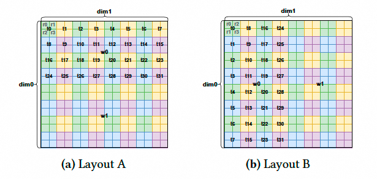
GPU 같은 DL hardware의 증가하는 complexity는 더 복잡한 tensor layout으로 이어졌다. 예를 들어 efficient matrix multiplication을 구현하기 위해 NVIDIA GPU는 Ampere, Hopper, Blackwell 세 generation architecture에서 Tensor Cores를 사용하기 위한 서로 다른 layout을 통합했고, 각 architecture는 data type이 달라질 때마다 또 다른 variant를 가진다. AMD와 Intel 같은 다른 GPU vendor도 equivalent tensor core를 활용해 acceleration할 때 각자 unique한 layout을 구현했다. 따라서 hardware architecture와 다양한 DL model의 빠른 발전은 tensor layout을 model하는 새로운 방법을 절실히 요구한다.
이 문단은 "complexity"를 매우 잘 구체화했다. complexity는 model에서만 오는 것이 아니라 hardware의 빠른 iteration에서도 온다. NVIDIA 세 generation GPU(Ampere, Hopper, Blackwell)의 Tensor Core가 layout에 서로 다른 요구를 가지고, 이 요구가 data type에 따라 또 달라진다는 점을 명확히 지적한다. 이는 layout problem의 diversity와 variability를 강하게 증명한다.
위 논거를 바탕으로 "tensor layout을 model하는 새로운 방법이 필요하다"는 긴급성을 다시 강조한다. 여기서 "modeling"이라는 단어가 매우 중요하다. 저자들의 목표가 단지 몇 가지 layout을 implement하는 것이 아니라, unified mathematical or abstraction framework를 세우는 것임을 암시한다.
그다음 저자들은 현재 software complexity를 소개한다. 현재 tensor computation용 DL programming model과 library에는 tensor layout을 flexible하고 efficient하게 construct하고 transform할 수 있는 solution이 부족하다. DL practitioner는 보통 peak performance를 얻기 위해 NVIDIA cuDNN, cuBLAS 같은 highly optimized vendor library에 의존한다. 이런 library는 standard operation 처리에서는 뛰어나지만, 제한된 tensor operator set만 지원한다. 새 model이 도입하는 custom operator는 그 coverage를 벗어나므로 developer가 GPU Kernel을 처음부터 구현하고 layout 관련 complex problem을 처리해야 한다.
한편 TVM, XLA, Triton 같은 DL compiler는 compiler backend에서 tensor layout을 special attribute로 implement한다. 하지만 이 compiler들은 제한된 몇 가지 layout과 layout conversion만 지원하고, general하고 robust하며 systematic한 framework가 부족하다. custom layout을 정의하려면 compiler를 크게 수정해야 하고, layout conversion 사이에 \(O(N^2)\) complexity explosion을 초래한다. 이런 layout과 conversion을 manual implement하면 보통 error-prone하다. 현재까지 Triton GitHub repository에 제출된 bug 중 12%가 layout 관련이다.
또한 tensor layout을 optimization의 first-class citizen으로 다루지 않으면 tensor computation과 layout conversion에서 보통 suboptimal data movement가 발생한다. 예를 들어 FlashAttention-3는 manual optimization을 통해 byte permute와 warp shuffle instruction을 사용해 layout conversion에서 shared memory를 우회했지만, 이 방법은 아직 DL compiler에 구현되지 않았다.
이 gap을 메우려면 몇 가지 technical challenge를 극복해야 한다. 첫째, tensor를 hardware resource에 mapping하기 위한 general하고 composable한 representation이 필요하다. 둘째, layout conversion은 unified formalism 안에서 표현되어야 하며, data swizzling 같은 complex transformation까지 포함할 수 있어야 한다. 셋째, 이 representation은 efficient data access와 computation을 보장하기 위해 underlying hardware optimization과 seamless하게 integrate되어야 한다.
이 문단은 앞선 problem analysis를 세 가지 명확한 technical challenge로 추려, 뒤에서 solution을 소개하기 위한 groundwork를 마련한다.
- General and composable representation: "general"은 여러 layout을 표현할 수 있음을 뜻하고, "composable"은 simple operation으로 small layout을 구성해 large layout을 만들 수 있음을 뜻한다. 이는 good algebraic structure를 가진 representation이 필요하다는 방향을 가리킨다.
- Unified formal conversion: challenge는 simple transpose부터 complex swizzling까지 모든 layout conversion을 같은 "language"로 설명하는 방법이다. "formal"이 핵심이다. 이는 precise하고 unambiguous하며 algorithm으로 처리 가능하다는 뜻이다.
- Hardware optimization과 integration: theoretical model은 실제로 내려와야 한다. 이 representation은 결국 compiler가 vectorized load,
mmainstruction 같은 구체적이고 efficient한 hardware instruction을 생성하도록 도와야 한다.
그래서 저자들은 linear layout(Linear Layouts)을 제안한다. 이는 tensor layout을 F2 field 위 vector space 사이의 linear mapping으로 보고, linear algebra를 layout operation의 unified abstraction으로 사용해 이런 challenge를 해결하는 방법이다. 각 tensor layout은 linear function으로 model된다. 이 function은 input과 output의 binary bit 위 binary arithmetic을 사용해 physical resource index를 size \(2^n\)인 logical tensor로 mapping한다.
이 방식으로 swizzling과 broadcast 같은 complex representation을 bit-vector 위의 XOR와 AND operation 조합으로 자연스럽게 표현할 수 있다. 또한 임의의 layout conversion은 matrix transformation, 예를 들어 matrix multiplication과 inversion으로 compose될 수 있다. 이는 hardware hierarchy 사이와 hierarchy 내부의 data exchange를 formal하게 설명하게 해 주며, compiler가 data movement를 위한 efficient hardware primitive를 general하게 생성할 수 있게 한다. layout을 hard-code하고 case-by-case로 처리할 필요를 없앤다. index permutation 또는 swizzling으로 표현 가능한 어떤 layout도 이 framework에 plug in되어 자동으로 optimize될 수 있다.
마지막으로 저자들은 linear layout을 Triton GPU backend code generation workflow의 일부로 구현했다. linear layout의 effectiveness를 evaluate하기 위해 generated kernel의 correctness와 performance를 linear layout을 사용하지 않는 old Triton과 비교한다.
old Triton은 layout-based code generation과 optimization에 heuristic method, 예를 들어 shared memory padding을 사용한다. 이는 common access pattern에는 효과적이다. 하지만 저자들은 이것이 layout conversion에서 많은 bug를 만들고, flexible layout을 지원하는 scalability가 부족하며, complex tensor access pattern을 처리할 때 performance가 suboptimal이라는 점을 관찰했다.
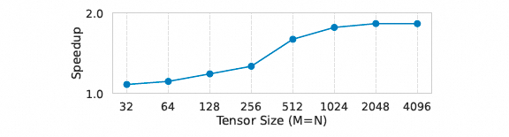
experiment result는 Linear Layout이 correctness를 높였고, 265개 real-world benchmark case에서 최대 1.40배, 평균 1.07배 speedup을 달성했음을 보여 준다.
이 글의 contribution은 다음과 같다:
- Linear Layout을 제안했다. 이는 F2 linear algebra를 사용해 unified framework 안에서 tensor layout을 represent하고 compose하는 novel method다.
- Linear Layout을 Triton의 GPU backend에 완전히 integrate하여, Triton 안의 어떤 operation에 대해서도 layout을 자동 선택하고 propagate할 수 있는 layout engine을 구현했다.
- novel algorithm을 도입했다. 여기에는 read/write vectorization을 maximize하고 read/write bank conflict를 minimize한다는 것을 증명할 수 있는 automatic optimal swizzling discovery algorithm, automatic optimal warp-shuffle generation algorithm, 그리고 이 family의 모든 layout에 대한 general hardware intrinsic lowering algorithm이 포함된다.
- synthetic DL workload와 real DL workload에서 Linear Layout을 evaluate하여 existing baseline보다 우수함을 입증했다. 또한 Triton에 이미 존재하던 많은 bug를 수정함으로써 Linear Layout이 robustness를 강화한다는 것도 보였다.
2. Background¶
2.1 GPU architecture¶
modern GPU는 multi-level hardware resource를 포함하는 hierarchical execution model로 extreme parallelism을 활용한다. 핵심 execution unit에는 cooperative thread array(CTA, Cooperative Thread Arrays), warp, thread가 있다. 각 GPU thread는 자기 private register를 가지며, 이것은 가장 낮은 latency의 storage를 제공하지만 capacity는 제한적이다. 일반 instruction은 single thread가 독립적으로 실행할 수 있다. 그러나 일부 special function unit은 더 높은 granularity level에서 실행되어야 한다. 예를 들어 NVIDIA의 mma(matrix multiply-accumulate) instruction은 여러 multiply-add operation을 parallel하게 실행해 tensor core를 활용하며, 이 instruction은 single warp가 issue한다. 더 advanced한 variant인 wgmma(warp-group matrix multiply-accumulate)는 여러 warp에서 matrix multiplication을 함께 실행해 이런 capability를 확장한다. AMD도 mfma(matrix fused multiply-add) instruction 같은 similar hardware primitive를 도입했다. 주의할 점은 이런 instruction이 correct result를 만들려면 data가 special layout으로 thread와 warp 사이에 distribute되거나, shared memory 또는 Blackwell의 Tensor Memory 같은 special memory unit에 저장되어야 한다는 것이다.
자세한 GPU architecture는 이전에 쓴 special topic을 참고할 수 있다:
GPU architecture evolution history
하지만 이런 layout은 보통 load/store 같은 다른 operation에 최적 performance를 가져오지 못하며, 특정 instruction으로 global memory에서 special memory unit으로 data를 직접 copy할 수 있는 것도 항상 아니다. 따라서 data는 memory access용 layout, 즉 coalesced access와 bandwidth를 강조하는 layout에서 compute unit이 선호하는 layout, 즉 arithmetic throughput을 강조하는 layout으로 변환되도록 자주 rearrange되어야 한다. 간단히 말해 peak performance를 달성하려면 이런 dedicated unit을 활용하는 것뿐 아니라 tensor layout과 conversion도 정교하게 design해야 한다.
예를 들어 Cutlass Layout algebra는 이전에 쓴 글을 참고할 수 있다.
Tensor-008 CuTe Layout algebra
2.2 Triton language and compiler¶
Triton은 Python-like DSL이며, high-performance deep learning primitive를 작성하기 위한 flexible interface 제공을 목표로 한다. Triton의 compiler backend는 MLIR를 활용한다. MLIR는 여러 level에서 abstraction을 표현할 수 있게 하고, 일련의 dialect를 통해 smooth lowering process를 촉진한다.
핵심은 Triton kernel function이 single program multiple data(SPMD) model을 따른다는 점이다. 여기서 computation은 여러 abstract Triton program instance로 나뉜다. 이 design은 developer가 주로 CTA-level parallelism에 집중할 수 있게 한다. Triton의 operator는 각 program instance 안의 모든 thread에 적용되기 때문이다. Triton에서 tensor라는 용어는 original PyTorch tensor에서 추출한 data block(tiles)을 뜻하며, 이것이 GPU kernel function의 input과 output이다.
compile 동안 Triton의 Python code는 먼저 Triton dialect(tt)로 translate되고, 이후 TritonGPU dialect(ttg)로 translate된다. 전체 process에서 각 tensor는 modern GPU에서 사용 가능한 hardware functional unit을 충분히 활용하기 위해 특정 layout과 associate된다. 예를 들어 dot-product-like operator, 즉 tt.dot과 tt.dot_scaled를 만나면 Tensor Cores와 similar unit은 mma layout을 통해 사용된다.
2.3 linear algebra prerequisite¶
이 section은 몇 가지 basic concept of linear algebra를 소개한다.
Vector Space: \(F\)를 field, 예를 들어 \(\mathbb{R}\)라고 하자. vector space는 non-empty set \(V\), 예를 들어 \(\mathbb{R}^3\)이며, 그 element를 vector라고 부른다. 이 set 위에는 vector addition과 scalar multiplication이라는 두 operation이 정의되어 있고, 여덟 가지 vector space axiom, 즉 addition의 associativity, commutativity, identity, inverse와 scalar multiplication의 distributivity, compatibility, identity를 만족한다.
여기서는 closed하고 good algebraic structure를 가진 world를 정의한다. 논문은 hardware index와 logical tensor coordinate를 모두 vector로 본다. 예를 들어 hardware index는 bit-vector로 표현할 수 있고, 가능한 모든 bit-vector는 F2 field 위의 vector space를 이룬다. logical tensor coordinate도 마찬가지다. "linear layout"은 이 두 vector space 사이에 세워진 mapping이다.
Subspace: non-empty subset \(S \subseteq V\)가 inherited operation 아래에서 closed라면, \(S\)는 \(V\)의 subspace다.
vector space 안의 작은 "closed world"다. 예를 들어 hardware index bit-vector는 여러 부분으로 구성될 수 있다. Warp ID를 나타내는 bit, Thread ID를 나타내는 bit, Register ID를 나타내는 bit가 그렇다. 각 부분은 전체 hardware index space의 subspace로 볼 수 있다. optimization algorithm, 예를 들어 section 5.4에서는 서로 다른 subspace 사이의 관계, 즉 intersection과 union 등을 자주 분석해야 한다.
Linear Combination: vector \(x_1, x_2, \ldots, x_n \in V\)와 scalar \(a_1, a_2, \ldots, a_n \in F\)가 주어졌을 때, vector \(v\)가 다음 형태로 쓰일 수 있다면 \(v\)는 vector \(x_1, \ldots, x_n\)의 linear combination이다.
\(v = a_1x_1 + a_2x_2 + \cdots + a_nx_n\)
"scaling"과 "addition"으로 new vector를 만드는 basic operation이다. F2 field에서는 scalar가 0과 1뿐이므로 "scaling"은 "취할지 말지"가 된다. "addition"은 "XOR"다. 따라서 vector의 linear combination은 vector set에서 일부를 선택하고 그것들을 XOR하는 것이 된다. 이것이 F2 field 위 linear algebra operation의 본질이다.
Span: subset \(S \subseteq V\)에 대해 \(S\)의 span은 \(S\) 안의 vector가 만들 수 있는 모든 linear combination의 set이다:
이는 \(S\)를 포함하는 minimum subspace다.
한 set of basis vector가 "도달"할 수 있는 모든 range를 설명한다. data distribution의 range를 정확히 describe하고 reason하는 데 쓰인다. 예를 들어 span(A_Thr)는 layout A에서 모든 thread가 도달할 수 있는 logical position의 set을 나타낸다. bank conflict를 분석할 때 저자들은 span(M_Seg)(memory segment subspace)와 span(A_Thr)(thread subspace)의 intersection이 empty인지 판단해야 한다.
Linear Independence: 다음 equation에 non-trivial solution \((a_1, \ldots, a_n) \neq (0, \ldots, 0)\)이 없다면, vector set \(x_1, \ldots, x_n \in V\)는 linearly independent다:
\(a_1x_1 + a_2x_2 + \cdots + a_nx_n = 0\)
Basis: subset \(S \subseteq V\)에 대해 \(S\)의 basis는 vector set \(x_1, \ldots, x_n\)이며, \(S = \text{span}(\{x_1, \ldots, x_n\})\)를 만족하고 set \(\{x_1, \ldots, x_n\}\)가 linearly independent인 것이다.
linear independence는 한 set의 "가장 순수하고", "중복 없는" vector라는 뜻이다. 어느 하나도 다른 vector들로 표현할 수 없다. basis는 전체 space 또는 subspace를 generate(span)할 수 있는 minimum linearly independent vector set이다. "basis"는 이 space의 "coordinate axis"와 같다. "basis"는 algorithm design의 core tool이다.
- 예를 들어 section 5.4의 "optimal Swizzling" algorithm에서 저자들은 shared memory의 bank index를 위한
basis를 선택해야 한다. 이 basis의 vector는 thread distribution의 subspace와 가능한 한 "unrelated"해야 conflict를 피할 수 있다. - warp shuffle optimization에서는 필요한 data exchange의 "direction"을 설명하기 위해 basis
G를 construct해야 한다. - basis의 선택은 unique하지 않다. 서로 다른 basis는 서로 다른 coordinate system에 대응한다. "좋은" basis를 찾는 것이 많은 optimization algorithm의 key다.
2.4 F2 mathematics¶
앞에서 이미 어느 정도 자세히 펼쳐 설명했다. F2는 두 element {0, 1}을 포함하는 field를 뜻한다. F2에서는 모든 arithmetic operation이 modulo 2로 수행된다. 예를 들어 addition은 다음과 같이 정의된다:
이는 logical XOR에 대응하고, multiplication은 다음 식으로 주어진다:
이는 logical AND에 대응한다.
F2 위 linear algebra의 basic operation 중 하나는 matrix multiplication이다. \(A \in F_2^{m \times n}\)과 \(B \in F_2^{n \times p}\)를 element가 F2 안에 있는 matrix라고 하자. product \(C=AB \in F_2^{m \times p}\)의 element는 다음과 같이 정의된다:
여기서 summation \(\bigoplus\)는 F2 안의 repeated addition, 즉 product \(a_{ik} \cdot b_{kj}\)에 대한 XOR를 뜻한다. 이는 standard matrix multiplication과 유사하지만 모든 arithmetic operation이 F2 안에서 수행된다는 점이 다르다.
F2의 arithmetic은 자연스럽게 binary logic과 align되어 있어, 이 field 위의 operation은 hardware implementation에서 매우 efficient하다. 따라서 F2는 cryptography와 error-correcting code 같은 분야에서 널리 사용된다.
3. Overview¶
Figure 3은 Triton에서 사용 가능한 모든 layout을 나열한다.
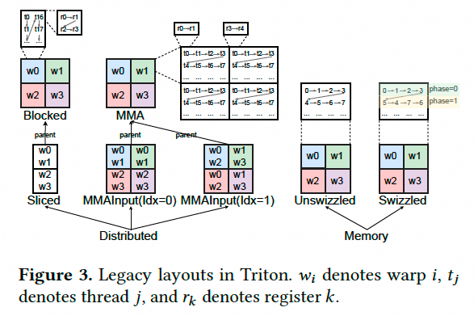
highest level에서 layout은 distributed layout과 memory layout으로 나뉜다. 전자는 tensor element가 서로 다른 execution unit 위에 "distributed"되어 있음을 나타내고, 후자는 tensor element가 특정 special memory에 저장되어 있음을 나타낸다. distributed layout은 다시 Blocked, Sliced, MMA, MMA Input layout 등 몇 가지 type으로 나뉜다.
memory layout은 다시 Unswizzled와 Swizzled layout으로 나뉠 수 있다. Blocked layout은 보통 contiguous memory access에 사용된다. MMA와 MMA Input layout은 matrix multiplication operation, 예를 들어 tt.dot의 output과 input에 사용된다. MMA layout은 mapping되는 hardware instruction에 따라 further classify될 수 있다. 예를 들어 NVIDIA GPU의 mma와 wgmma, AMD GPU의 mfma가 있다. Sliced layout은 parent layout에서 한 dimension을 추출해 broadcast의 input 또는 reduction의 output으로 사용한다.
Triton의 old layout system은 각 layout이 자체 interface method를 정의하도록 요구한다. 예를 들어 getNumElementsPerThread(per-thread element count)와 getNumContiguousElements(contiguous element count)가 있다. 또한 tensor element의 indexing 방식과 layout 사이의 conversion도 각 layout마다 explicit하게 implement되어야 한다. 이 방법은 bug가 많은 layout construction과 conversion으로 이어졌다.
Linear Layout 방식은 linear layout 기반 mechanism을 사용해 layout을 define한다. backward compatibility를 위해 각 old layout을 linear layout으로 define하는 tool도 제공한다. 어떤 layout이 이 tool로 define되면 getNumElementsPerThread 같은 interface method는 다시 implement할 필요가 없다. 이 방법을 통해 임의의 layout을 Triton compiler core backend 수정 없이 instantiate할 수 있다. Intel GPU 같은 out-of-tree backend용 layout도 포함된다. 또한 이 방법은 robust layout conversion을 자동으로 implement하고, code generation에서 hardware resource를 결정하는 방식을 unify한다.
4. Linear Layout¶
이 chapter는 Linear Layout의 definition, 몇 가지 basic linear layout operator, 다양한 Triton layout을 linear layout instance로 만드는 방법, 그리고 Triton에 적용되는 general layout engine을 다룬다. 이 chapter에서 제시하는 proposition의 proof는 별도 언급이 없으면 appendix에 제공된다.
4.1 A Motivating Example¶
GPU programming의 대부분 parameter는 power of two다. warp 하나는 32개 또는 64개 thread를 포함하고, warp group 하나는 4개 warp를 포함하며, mma와 wgmma 같은 matrix multiplication intrinsic은 data block dimension size가 \(16 \times n\)이고 \(n \geq 1\)일 것을 요구한다. 또한 Triton programming model에서는 tensor dimension과 각 tensor에 associated된 layout subdivision, 예를 들어 per-thread register count와 thread count도 power of two로 제한된다. 예를 들어 2×2 register, 4×8 thread, 2×1 warp를 사용해 16×16 tensor를 tile한다.
이 quantity들이 모두 power of two이므로, coordinate의 binary representation을 사용해 layout A에서 element distribution을 visualize하는 것이 매우 straightforward해진다. 표와 같다.
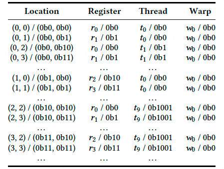
모든 thread의 register 0(r0)은 coordinate \((i, j)\)에 위치하며, 여기서 \(i\)와 \(j\)의 least significant bit는 모두 0이다.
예를 들어 thread t1의 r0는 \((0, 2) = (0b0, 0b10)\)에 있다. 비교를 위해 r1 element의 coordinate는 \(i\)의 least significant bit가 항상 0이고, \(j\)의 least significant bit는 항상 1이다.
예를 들어 t9의 r1은 \((2, 3) = (0b10, 0b11)\)에 있다. 이는 각 thread가 logical tensor 안에서 2×2 contiguous block 하나를 차지하기 때문이다.
더 일반적으로, 각 hardware index를 점점 더 큰 block 안의 coordinate로 표현할 수 있게 해 주는 세 mapping function을 생각할 수 있다. 여기에는 다음이 포함된다.
-
-
-
예를 들어 warp w0 안의 thread t9의 register r1을 생각하자. register mapping은 r1을 \(loc_{r1} = (0, 1) = (0b0, 0b1)\)에 놓는다. 즉 t9 block의 두 번째 column이다. thread mapping은 이 block을 warp block 안의 \(loc_{t9} = (2, 2) = (0b10, 0b10)\)에 위치시키고, warp mapping은 \(loc_{w0} = (0, 0)\)을 assign한다. 이 세 coordinate pair의 bitwise XOR를 취하면 이 register의 absolute position이 나온다:
종합하면, warp 안의 thread 하나가 가진 element 하나를 표현하기 위해 size 8인 vector \(v\)를 고려할 수 있다. 앞의 2 bit \(v_{0:1}\)는 register(Reg), 다음 5 bit \(v_{2:6}\)는 thread(Thr), 마지막 1 bit \(v_7\)은 warp(Wrp)를 나타낸다. 우리는 layout \(A = F_2^{8 \times 8}\)을 define할 수 있다.
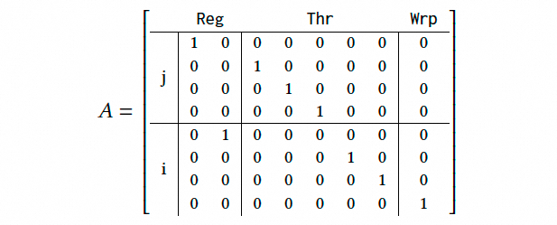
\(w = Av \in F_2^8\)를 통해 tensor 안에서 \(v\)의 position \((i, j)\)를 얻을 수 있다. 여기서 \(w_{0:3}=j\)이고 \(w_{4:7}=i\)이며, \(j\)가 fastest-changing dimension이라고 가정한다.
Labeled Vector Spaces¶
layout의 각 bit에 label을 assign한다. input \(v\)는 \(F_2^2 \times F_2^5 \times F_2^1\) 안에 있으며, Reg × Thr × Wrp space를 model한다. output \(w\)는 \(F_2^4 \times F_2^4\) structure를 따르며 logical tensor의 두 dimension \((i, j)\)를 나타낸다.
matrix-vector multiplication으로 수행되는 coordinate computation을 더 잘 이해하기 위해 warp w0 안 thread t9의 register r1을 생각하자. 여기서 \(v_{\text{Reg}} = \text{0b01} = [1, 0]^T\) (주: least significant bit가 앞에 온다), \(v_{\text{Thr}} = \text{0b01001} = [1, 0, 0, 1, 0]^T\), 그리고 \(v_{\text{Wrp}} = \text{0b0} = [0]^T\)다. \(Av\)를 수행하면 \(A\)의 각 row와 \(v\) 사이의 bitwise product를 XOR하여 \(w_j = [1, 1, 0, 0]^T = \text{0b0011} = 3\) 및 \(w_i = [0, 1, 0, 0]^T = \text{0b0010} = 2\)를 얻는다.
이 예제는 "linear layout"이라는 abstract concept을 구체적으로 느낄 수 있게 만든다. 먼저 GPU programming의 많은 parameter가 power of two이므로 모든 index를 bit로 표현하기 쉽다. 그리고 element의 final logical coordinate는 서로 다른 hardware hierarchy(register, thread, Warp) 위의 local coordinate를 linear superposition한 것이다. binary world에서 "linear superposition"은 XOR다.
이 예시는 이런 intuitive observation을 mathematical model로 변환하는 방법을 보여 준다.
- Input: hardware hierarchy index(Reg, Thr, Wrp)를 긴 bit-vector \(v\)로 concatenate한다.
- Output: logical tensor coordinate \((i, j)\)도 bit-vector \(w\)로 표현한다.
- Mapping: 둘 사이의 관계 \(w=Av\)가 바로 \(\mathbb F_2\) field 위의 matrix-vector multiplication이다.
\(A\) matrix는 본질적으로 Permutation Matrix다. input bit를 어떻게 "rearrange"해 output bit를 형성하는지를 설명한다.
- \(A\)의 첫 번째 row는
[1 0 0 0 0 0 0 0]이다. 이는 output coordinate의 \(j_0\) bit가 input register index의 \(Reg_0\) bit에 의해서만 결정된다는 뜻이다. - \(A\)의 다섯 번째 row는
[0 1 0 0 0 0 0 0]이다. 이는 output coordinate의 \(i_0\) bit가 input register index의 \(Reg_1\) bit에 의해서만 결정된다는 뜻이다.
4.2 Definition and construction¶
이 section은 Linear Layout theory의 "toolbox"다. linear layout을 construct, compose, decompose, invert하는 데 필요한 전체 mathematical tool set을 정의한다.
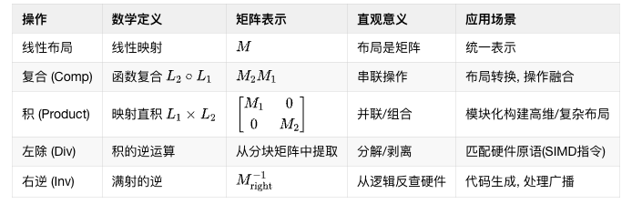
Definition 4.1: Linear Layout¶
Linear Layout을 F2 field 위의 labeled vector space 사이의 linear mapping으로 정의한다. 예를 들어 layout \(L: Reg \times Thr \times Wrp \rightarrow \mathbb F_2^n \times \mathbb F_2^m\)를 define할 때, layout \(L\)의 각 labeled subspace는 subscript로 표시한다. 예를 들어 \(L_{Reg}\)처럼 쓴다.
이 definition은 layout이 더 이상 복잡한 code 조각이 아니라 matrix로 표현할 수 있는 function이라는 뜻이다. 이 function의 역할은 hardware index를 나타내는 bit-vector를 logical coordinate를 나타내는 bit-vector로 linearly transform하는 것이다.
Definition 4.2: Composition¶
F2 field 위의 vector space \(U, V, W\)와 linear layout \(L_1: U \to V\), \(L_2: V \to W\)가 주어졌을 때, 이들의 composition을 다음과 같이 정의한다:
\(L_1\)과 \(L_2\)를 matrix \(M_1\)과 \(M_2\)로 표현하면, \(L_2 \circ L_1\)을 나타내는 matrix는 F2 field 위에서 label-wise matrix multiplication \(M_2M_1\)으로 주어진다.
본질은 function composition을 통해 두 layout을 어떻게 "chain"할지 정의하는 것이다. linear algebra를 통해 complex continuous operation을 simple matrix multiplication으로 단순화한다. application scenario는 다음과 같다:
- Layout conversion: layout \(A\)와 layout \(B\)가 있고, 둘 다 hardware index에서 logical coordinate로 가는 mapping이라고 하자. 즉 \(L_A: \text{Hardware} \to \text{Logic}\), \(L_B: \text{Hardware} \to \text{Logic}\)다. 우리는 data를 layout A에서 layout B로 convert하고 싶다. 이는 transformation \(T: \text{Hardware}_A \to \text{Hardware}_B\)를 찾는 것과 같다. 이 transformation은 \(T = L_B^{-1} \circ L_A\)로 얻을 수 있다. 그 matrix는 \(M_T = M_B^{-1} M_A\)다.
- Operation fusion: layout \(L\), 즉 hardware에서 logic으로 가는 layout 뒤에 logical operation, 예를 들어
transpose가 따라온다고 하자.transpose자체도 linear mapping \(T: \text{Logic} \to \text{Logic}'\)다. 그러면 hardware에서 transposed logical coordinate로 가는 new layout은 \(T \circ L\)이고, 그 matrix는 \(M_T M_L\)이다. 이렇게 compile time에 operation과 layout을 fuse한다.
Definition 4.3: Product¶
F2 field 위의 두 vector space \(U, V\)가 주어졌을 때, 이들의 product를 다음과 같이 정의한다:
두 linear layout \(L_1: U_1 \to V_1\), \(L_2: U_2 \to V_2\)와 \(u_1 \in U_1, u_2 \in U_2\)가 주어졌을 때, 이들의 product를 다음과 같이 정의한다:
\(L_1\)과 \(L_2\)를 matrix \(M_1\)과 \(M_2\)로 표현하면, \(L_1 \times L_2\)를 나타내는 matrix는 label-wise block diagonal matrix로 주어진다.
로 주어진다.
주: footnote에서 저자는 이 construction이 mathematics에서는 더 흔히 map의 direct sum \(L_1 \oplus L_2\)라고 불리지만, XOR symbol \(\oplus\)와 혼동을 피하기 위해 "product"라는 term을 선택했다고 말한다.
product의 목적은 두 independent layout을 어떻게 "parallel"하게 연결해 higher-dimensional layout을 만들지 정의하는 것이다. 이는 modular construction으로 complex layout을 만드는 key다. 본질은 map의 direct sum이다. new layout의 "first part"는 완전히 첫 번째 old layout에 의해 결정되고, "second part"는 완전히 두 번째 old layout에 의해 결정되며, 둘은 서로 interfere하지 않는다. application scenario는 다음과 같다:
- Multi-dimensional layout construction: 예를 들어 2D tensor layout은 dimension
i를 처리하는 1D layout과 dimensionj를 처리하는 1D layout의 product로 볼 수 있다. - Hardware hierarchy로부터 construction: section 4.1의 예제는 register layout, thread layout, Warp layout이라는 세 smaller layout의 product로 볼 수 있다. 최종 large matrix는 이 세 small layout matrix로 구성된 block diagonal matrix다.
- Unrelated dimension 처리: operation 하나가 tensor의 특정 dimension에만 영향을 준다면, 전체 layout은 영향을 받는 dimension의 layout과 영향을 받지 않는 dimension layout, 보통 identity mapping의 product로 볼 수 있다.
Composition과 Product operation은 simple layout을 더 complex한 layout으로 combine하는 데 사용된다. 예를 들어 composition operation은 parent layout의 특정 dimension을 all-zero로 mapping해 parent layout에서 slice를 추출할 수 있다. product operation은 register에서 thread, warps로 단계적으로 complex layout을 construct하는 데 사용할 수 있다. 아래에서는 product operation의 inverse operation이 존재하는 경우도 정의한다.
Definition 4.4: Left Division¶
matrix \(M\)이 다음 structure를 가진다면
그렇다면 \(M\)은 \(M_1\)으로 left-divisible하다고 한다. left division을 \(M /_\ell M_1 = M_2\)로 표시한다. linear layout에서는 이 operation을 label-wise로 처리한다.
left division은 layout이 ldmatrix 같은 efficient hardware primitive를 만족하는 smaller layout으로 decompose될 수 있는지 결정하는 데 매우 유용하다.
large layout \(M\)이 small layout \(M_1\)과 \(M_2\)를 "parallel"하게 combine한 것이라고 상상해 보자. left division \(M /_\ell M_1\)의 역할은 이 large layout에서 \(M_1\) part를 "peel off" 또는 "cut out"해 remaining \(M_2\) part를 얻는 것이다.
Label-wise 처리: 이 말은 중요하다. linear layout에서 matrix의 row와 column은 모두 semantic label, 예를 들어 Reg, Thr, i, j를 가진다. left division의 matching과 peeling process는 반드시 이 label을 respect해야 한다. 예를 들어 \(M_1\)이 Reg -> i mapping이라면, \(M\) 안에서도 대응하는 Reg input과 i output block을 찾아야만 "division"을 할 수 있다. 이것이 operation의 physical meaning과 logical meaning이 correct하다는 것을 보장한다.
이 operation의 core purpose는 Pattern Matching이다. 이것은 중요한 문제를 처리하는 데 사용된다. large arbitrary layout \(L\)이 그 내부에 우리가 관심 있는 smaller layout pattern \(T\)를 "contain"하는가?
compiler code generation context에서 이 "우리가 관심 있는 layout pattern \(T\)"는 보통 어떤 efficient hardware instruction이 요구하는 specific data layout이다. 이를 통해 compiler는 ldmatrix, stmatrix, vectorized load/store 같은 efficient SIMD instruction을 언제 사용할 수 있는지 formal하고 reliable하게 자동 식별할 수 있고, linear layout의 theoretical advantage를 실제 performance improvement로 전환할 수 있다.
Definition 4.5: Right Inverse¶
surjective linear layout \(L: U \to V\)는 right inverse를 가진다.
\(M\)이 layout \(L\)의 \(m \times n\) matrix representation이라면, \(M^{-1}\)을 equation \(MX = I_m\)의 \(n \times m\) least-squares solution으로 정의한다. 여기서 \(I_m\)은 \(m \times m\) identity matrix다. 특히 이것은 F2 field 위의 Gaussian elimination으로 계산할 수 있다.
right inverse의 본질은 output에서 input을 역추적하는 것이다. 즉 logical coordinate \(w\)가 주어졌을 때, 어느 hardware position \(v\)에서 data를 read/write해야 하는가?
- Standard inverse(invertible case): layout이 invertible, 즉 one-to-one이면 \(v = M^{-1}w\)다. answer는 unique하다.
- Right inverse(broadcast/duplicate case): layout이 broadcast라면 logical coordinate \(w\)가 여러 hardware position에 대응한다. compiler는 code generation 때 그중 임의의 valid position 하나만 찾으면 된다. \(v = M_R^{-1}w\)가 그런 concrete hardware position을 제공한다.
4.3 Completeness analysis¶
4.3.1 Distributed Layouts¶
section 4.1의 예제에서는 Figure 1의 layout A가 어떻게 linear layout을 구성하는지 논의했다.

이전 section에서 소개한 concept을 사용하면 이런 layout을 쉽게 generalize할 수 있다. 이런 layout은 Triton old layout system에서 Blocked layout이라고 불렸다.
Proposition 4.6: Blocked layout은 linear layout이다.
Proof: shape가 \((d_1, \ldots, d_\ell)\)인 tensor와 associated된 Blocked layout에 대해, length \(\ell\)인 tuple \(R, T, W\)를 고려한다. 이들은 각 dimension에서 register, thread, warp 수의 \(\log_2\) 값을 각각 나타낸다. \(R_i + T_i + W_i = d_i\)임에 주의하라.
Blocked layout에는 order \(o\)도 있다. 이는 \(\{1, \ldots, \ell\}\)의 permutation으로 표현되며, \(o_i\)는 \(i\)번째 fastest-changing dimension을 나타낸다. 그런 다음 다음을 정의한다.
그리고 \(id_o^T, id_o^W\)도 유사하게 정의한다. 다시 order \(o\)가 일으키는 dimension permutation을 고려한다:
마지막으로 이 모든 symbol을 사용하면, 이 Blocked layout과 associated된 linear layout은 다음 식으로 주어진다:
이것은 linear mapping이다. linear mapping의 composition이기 때문이다. □
간단히 설명하면, Blocked layout의 parameter, 예를 들어 dims, order, sizePerThread 등을 가장 basic component로 decompose한다. 각 logical dimension이 몇 개의 Reg/Thr/Wrp bit로 표현되는지를 보는 것이다.
그다음 identity mapping \(id_{i,j}^k\)를 "Lego block"처럼 사용한다. \(id_{\text{Reg}, o_1}^{r_{o_1}}\)는 Reg의 앞 \(r_{o_1}\)개 bit를 logical dimension \(o_1\)의 corresponding bit로 직접 mapping한다는 뜻이다. 이어서 Product operation을 사용해 모든 Reg, Thr, Wrp mapping을 하나의 large mapping \((id_o^R \times id_o^T \times id_o^W)\)으로 combine한다. 이 mapping의 output은 order에 따라 arranged된 logical coordinate다.
마지막으로 permutation mapping \(\sigma_o^{-1}\), 즉 composition operation을 사용해 output coordinate를 standard order \((d_1, \ldots, d_\ell)\)로 rearrange한다.
Blocked layout은 Triton의 distributed layout 중 하나다. distributed layout은 register, thread, warp 위에 distribute된 layout을 describe하는 모든 layout을 뜻한다. 우리는 그 dimension을 Reg, Thr, Wrp로 label한다. 다른 common distributed layout은 NVIDIA GPU의 mma와 wgmma operation 같은 matrix multiplication operation과 associated된 것들이다. 비슷하게 AMD와 Intel matrix multiplication function용 layout도 constructively 존재함을 proof할 수 있다. 우리는 이런 instruction의 input과 output layout을 MMA layout이라고 부른다.
Proposition 4.7: mma와 wgmma의 input 및 output layout은 linear layout이다.
Proof: 이 경우 logical matrix는 2-dimensional이다. bit width가 \(b\)인 input에 대해 mma의 lhs input과 output의 register tile은 다음 식으로 주어진다:
rhs의 tile은 다음 식으로 주어진다:
이는 첫 번째 tile의 transpose이며, 각 thread의 register가 절반으로 줄어든다.
wgmma의 lhs input tile은 mma의 lhs tile에 \(id_{\text{Wrp}, 0}^2\)를 multiply해 전체 warp group을 cover함으로써 얻는다.
output의 remaining part tile은 첫 번째 tile에 \(id_o^W\)를 multiply해 얻는다. 고정된 order \(o\)에 대해 이 order는 implementation이 선택할 수 있다.
그다음 input tile의 warp part는 각 output tile을 소유한 warp를 보고, 주어진 warp 또는 warp group이 iterative inner product 계산에 필요한 모든 element를 갖도록 보장하는 방식으로 계산된다. 다시 말해 output과 같은 warp order를 따르면 inner-product dimension에 data를 가진 각 warp에 대해 broadcast가 필요하다. 즉 matrix에 all-zero column을 추가한다. outer-product dimension이면 identity matrix를 multiply한다. □
저자는 mma layout, 여기서는 NV GPU 대상 linear layout matrix의 construction formula를 직접 제시한다. 이는 NVIDIA mma.sync instruction이 register 안 data distribution에 요구하는 사항에 대응한다. 예를 들어 \(id_{\text{Thr}, 1}^2 \times id_{\text{Thr}, 0}^3\)는 thread ID의 lower 2 bit가 logical dimension 1, 예를 들어 column에 기여하고, 다음 3 bit가 logical dimension 0, 예를 들어 row에 기여한다는 뜻이다. 이렇게 interleaved distribution pattern이 형성된다. wgmma construction은 mma 기반 위에 Warp dimension mapping을 추가한 것이다.
그리고 "all-zero column 하나 추가"만으로 complex broadcast logic을 matrix로 매우 간단히 describe할 수 있다.
마지막 distributed layout category는 Sliced layout family다. 이는 어떤 dimension을 따라 reduction operation, 예를 들어 tt.sum, tt.min 등을 apply한 result로 정의된다.
Proposition 4.8: linear layout의 slice는 linear layout이다. proof는 간단하다. dimension 하나를 제거하는 것은 linear mapping이다.
비고: layout을 matrix로 표현할 때 sliced layout은 일부 row를 제거한다. 따라서 result layout은 injective가 아닐 수 있다. 일부 column이 zero vector일 수 있기 때문이다. 하지만 surjective는 된다.
Theorem 4.9: 모든 distributed layout은 linear layout이다.
이제 linear layout을 사용해 distributed layout에 대한 다음 formal definition을 세울 수 있다.
Definition 4.10(Distributed Layout): Triton의 distributed layout은 register, thread, warp에서 logical tensor로 가는 surjective linear layout이며, associated matrix의 각 column은 non-zero bit를 최대 하나만 가지고, non-zero column 두 개가 duplicate되지 않는다.
다시 말해 distributed layout은 extra zero column이 삽입될 수 있는 permutation matrix다. 이 property는 매우 중요하다. 이제 이전에 informal definition으로 설명하던 내용을 완전히 linear algebra와 code로 변환했기 때문이다.
핵심은 이런 induction과 construction을 통해 Triton의 모든 distributed layout type(Blocked, MMA, Sliced)을 하나씩 분석하고, 각각이 linear layout으로 표현될 수 있음을 증명했다는 점이다. 마지막으로 Theorem 4.9를 얻어 모든 distributed layout이 linear layout임을 선언하고 expressiveness proof를 완성한다.
그리고 Definition 4.10에서는 더 formal한 definition을 제시한다:
Surjective: layout이 전체 logical tensor를 cover함을 보장한다.각 column은 non-zero bit를 최대 하나만 가짐: 각 input bit, 즉 hardware index의 어떤 bit가 최대 하나의 output bit, 즉 logical coordinate의 어떤 bit에만 영향을 준다는 뜻이다.non-zero column 두 개가 duplicate되지 않음: 서로 다른 input bit는 항상 서로 다른 output bit에 영향을 준다는 뜻이다.extra zero column이 삽입될 수 있는 permutation matrix: 서로 다른 input bit는 항상 서로 다른 output bit에 영향을 준다는 뜻이다.
또 zero column insertion에 주의해야 한다. 즉 matrix의 어떤 column이 모두 0이면, 대응하는 input bit, 예를 들어 thread ID의 어떤 bit가 final logical coordinate에 아무 기여도 하지 않는다는 뜻이다. 사실 이것은 broadcast operation을 나타낸다. 즉 어떤 dimension에서 thread ID bit가 모두 zero column이면, 모든 thread가 이 dimension에서 같은 position에 access한다.
4.3.2 Memory Layouts¶
Triton의 또 다른 layout family는 Memory Layouts다. memory layout은 logical tensor를 programmable memory segment, 예를 들어 shared memory, tensor memory 등에 distribute하는 방식이다.
이를 memory offset Off에서 logical tensor coordinate로 가는 mapping으로 model한다. 가장 단순한 memory layout은 Unswizzled layout이다. 이것은 memory offset을 logical tensor에 직접 mapping한다. 즉 memory position \((i, j)\)가 logical tensor의 coordinate \((i, j)\)에 대응한다. 하지만 MMA family 같은 특정 distributed layout을 unswizzled layout으로 read/write하면 bank conflict 때문에 performance가 떨어진다. 이 문제를 해결하기 위해 mma swizzling이 도입되었고, 이것은 MMA layout을 read/write할 때 fast memory access를 가능하게 한다.
Definition 4.11(mma swizzling): parameter vec > 0, per_phase, max_phase >= 0이 주어졌고 모두 power of two일 때, mma swizzling을 element position \((i, j)\)에서 offset으로 가는 mapping으로 다음과 같이 정의한다:
여기서 ·는 uint64 위 multiplication을 뜻하고, \(\oplus\)는 XOR를 뜻하며, offset은 element unit으로 count된다.
이제 다음 proposition을 증명할 수 있다:
Proposition 4.12: MMA swizzled layout은 linear layout이다.
Proof: 관련 operation은 \(i, j\)의 binary bit 위에서 linear하므로 이 mapping은 linear하다. 명백히 injective이고 surjective이므로 inverse가 존재하며, 그 inverse도 logical tensor coordinate에서 Off로 가는 linear layout을 define한다. □
여기서 조금 더 풀어 보자:
- j mod vec: j의 low bit를 취한다. 이는 linear operation, 즉 특정 bit 선택이다.
- j / vec: j의 right shift다. 이것도 linear operation, 즉 다른 bit 선택이다.
- i / per_phase: i의 right shift다.
- ... mod max_phase: intermediate result의 low bit를 취한다.
- XOR (\(\oplus\)): F2 field 위의 addition이며 linear하다.
- · vec: left shift이며, 이것도 linear operation이다.
전체 formula는 input coordinate i와 j의 bit-vector에 일련의 selection(mask), shift, XOR operation을 수행하는 것으로 볼 수 있다. 이 모든 operation은 F2 field 위의 matrix operation으로 표현될 수 있으므로, 전체 mapping은 linear하다.
위 mapping의 inverse를 계산하면 \(2^m \times 2^n\) tensor에 대해 mma swizzling과 associated된 linear layout의 matrix representation이 다음 structure를 가진다는 것을 알 수 있다:
\(C\)의 각 row \(c_i\)는 다음 formula로 얻어진다.
다른 swizzling strategy도 유사하게 계산할 수 있다.
이 matrix structure를 조금 풀어 설명하면, 실제로는 Shear Transformation이다. 이것 역시 linear transformation이며, 특정 dimension을 따라 "tilt"시켜 bank conflict를 피하고 다른 dimension은 unchanged로 둔다.
I_mpart는icoordinate의 bit가 input offset의 일부 bit에 의해 직접 결정된다는 것을 설명한다.- off-diagonal
Cmatrix가 핵심이다. 이것은jcoordinate의 bit가 input offset의 다른 bit(\(I_n\) part)에 의해서만 결정되는 것이 아니라,icoordinate bit의 information도 섞인다는 뜻이다(Cpart). 이것이 바로 swizzling의 "rearrange"와 "mix coordinate" 효과다.
Theorem 4.13: 모든 memory layout은 linear layout이다.
이제 memory layout family를 formal하게 define할 수 있다.
Definition 4.14(Memory Layout): Triton의 memory layout은 invertible linear layout이며, associated matrix의 column은 non-zero bit를 1개 또는 2개 가진다.
먼저 memory layout은 one-to-one이어야 한다. 그렇지 않으면 서로 다른 logical coordinate 두 개가 같은 memory address에 저장되어 data overwrite가 발생한다.
- non-zero bit 1개: simple permutation에 대응한다.
Unswizzledlayout과 같다. - non-zero bit 2개: 어떤 output bit, 즉 memory offset의 특정 bit가 두 input bit, 즉 logical coordinate i,j의 특정 두 bit를 XOR해 얻어진다는 뜻이다.
Linear Layout은 distributed layout(Definition 4.10)과 memory layout(Definition 4.14)에 formal하고 computable한 definition을 제공한다.
- Distributed layout의 본질은 bit permutation과 broadcast(zero column)다.
- Memory layout의 본질은 bit permutation과 mixing(XOR)이다.
4.4 Closure under Triton operations¶
Triton operation은 네 category로 나눌 수 있다. (1) compute, (2) memory(global, shared, tensor 등), (3) layout conversion, (4) shape operation이다. 앞 section에서는 linear layout이 앞 두 category를 어떻게 처리하는지 논의했다. 이 section에서는 linear layout이 shape operation을 통해 layout을 어떻게 propagate할 수 있는지, 그리고 general layout engine을 활용해 layout conversion operation으로 element를 한 layout에서 다른 layout으로 이동시키는 방법을 살펴본다.
4.4.1 Triton Layout Engine¶
처음에 Triton은 global memory operation과 특정 input layout이 필요한 compute operation, 예를 들어 tt.dot을 통해 노출되는 mma 또는 wgmma에 blocked layout을 assign한다. 우리는 이를 anchor layouts라고 부른다.
propagation stage는 forward propagation과 backward propagation을 포함한다. forward propagation에서는 layout이 use chains를 따라 propagate되고, multiple input이 있는 operation에서 candidate layout이 merge된다. conflict는 heuristic model로 해결한다. 예를 들어 load/store operation에는 blocked layout을 선호한다. 이 stage에서는 multiple candidate layout을 가진 value를 normalize하기 위해 layout conversion이 insert된다.
backward propagation에서는 layout conversion이 definition chain을 따라 backward로 rematerialize된다. 해당 chain의 instruction cost가 작으면 layout conversion을 제거하기 위해 전체 operation chain이 rematerialize될 수 있다.
4.4.2 Propagation through shape operations¶
Triton의 shape operation을 고려한다. 여기에는 tt.trans, tt.reshape, tt.join, tt.split, tt.expand_dims, tt.broadcast가 포함된다.
각 input 또는 output의 distributed layout에 대해, 같은 family에서 온 output 또는 input layout이 존재하여 해당 operation이 사실상 low-cost인 no-op이 되게 한다. 다음으로 Definition 4.10에서 정의한 distributed layout이 이런 operation 아래에서 forward 또는 backward closed임을 증명한다.
Definition 4.10에 포함된 layout은 old layout보다 strict하게 더 많다는 점에 주의하라. 예를 들어 old layout은 MMA layout의 transpose를 표현하지 못하지만, Definition 4.10의 property는 이를 명확히 포함한다. 따라서 old layout에서는 어떤 operation에 대해 layout을 propagate할 수 없어 불필요한 layout conversion, 즉 extra data movement가 발생한다. Linear Layout은 이 engine을 최대한 general하게 만들어, section 5.2처럼 complex한 optimization을 Python frontend에서 zero runtime cost로 직접 구현할 수 있게 한다.
Closure는 set 안의 element에 어떤 operation을 apply했을 때 result가 여전히 그 set 안에 있는 성질이다. 여기서는 linear layout에 shape transformation operation(transpose, reshape 등)을 apply해도 new layout이 여전히 linear layout이라는 뜻이다.
또 no-op을 조금 풀어 보자. 예를 들어 blocked layout이 있고 그 matrix가 \(M\)이라고 하자. 이 layout의 data는 physical하게 Row-Major로 arranged되어 있다. 이제 여기에 transpose operation을 apply한다. transpose operation 자체도 matrix \(T\)로 표현할 수 있다.
compiler는 new layout matrix \(M' = T \cdot M\)을 계산한다. new layout \(M'\)는 mathematical하게 "Col-Major" layout을 describe한다. 전체 process에서는 실제 data movement가 전혀 발생하지 않는다. 후속 operation이 이 transposed tensor를 사용해야 할 때 compiler는 \(M'\)에 따라 직접 code를 generate한다.
5. Code Generation¶
Linear Layout은 language frontend와 compiler backend에서 algorithm을 develop하기 위한 structured foundation을 제공한다. 아래는 몇 가지 key example이다.
5.1 Layout Utilities¶
Linear Layout이 없으면 Triton의 layout attribute는 informal하게 define되고 case-by-case로 implement되어 subtle error와 suboptimal code를 낳는다. 아래에서는 두 case를 중점적으로 소개하며, Linear Layout이 이 process를 어떻게 simplify하고 code generation robustness를 높이는지 보여 준다.
Contiguous elements¶
per-thread contiguous element count를 계산하는 것은 tensor element를 global memory에서 load하거나 global memory로 store할 때 vectorization에 매우 중요하다. 이전에 Triton은 fastest-changing dimension을 heuristic하게 식별하고 그것이 contiguous element를 결정한다고 가정했다. 하지만 어떤 dimension이 element 하나만 포함할 때, 예를 들어 shape [128, 1] tensor에서는 Triton이 vectorization을 disable한다.
모든 layout에 대해 case-by-case로 vectorization을 enable하려면 많은 manual work가 필요하고 verification도 어렵다. Linear Layout을 사용하면 이 computation은 매우 straightforward해진다. logical tensor 안에서 maximum contiguous block을 찾는 문제로 귀결되며, 이 block은 layout의 inverse mapping \(L^{-1}\)를 통해 register에 identity로 mapping된다. linear layout \(L\)이 주어졌을 때, 임의의 \(i \le u\)에 대해 \(L^{-1}_{\text{Reg}}(i) = i\)가 되는 maximum \(u\)를 찾는다.
Broadcasting¶
blocked와 MMA layout 같은 old layout은 initial tile로 define된다. 이 tile은 register, thread, warp 사이에 data를 distribute한다. tile이 associated tensor보다 작으면 tensor 전체를 cover하도록 replicated되어 per-thread register usage가 늘어난다. 반대로 tile이 더 크면 tensor가 tile을 cover하도록 replicated된다. 이는 thread와 warp가 register 안에 duplicate data를 hold할 수 있다는 뜻이다. LLVM code generation에서 이런 behavior를 처리하는 것, 특히 reduce/scan operation에 대해 처리하는 것은 complex하다. arbitrary layout에서 어떤 thread가 duplicate data를 hold하는지 determine하기가 쉽지 않기 때문이다.
지난 몇 년 동안 이것은 Triton에서 지속적으로 bug source였다. Linear Layout은 이 process를 크게 simplify한다. Tiling operation은 Product operation(Definition 4.3)으로 translate된다. linear layout이 세워지면 duplicate data를 hold하는 thread와 warp를 identify하는 문제는 layout matrix의 zero column detection으로 단순화된다. 예를 들어 section 4.1에서 define한 \(A_{\text{reg}}\)에 zero column을 추가하면 register 4-7이 register 0-3과 같은 tensor element로 mapping된다는 뜻이다.
실제로 두 case를 통해 old system의 heuristic하고 error-prone한 attribute computation을 Linear Layout matrix 기반의 formal하고 precise한 computation으로 replace했다.
특히 broadcasting case에서는 data duplication의 mathematical essence가 드러난다. layout matrix에 zero column이 존재한다는 것이다. thread ID mapping을 describe하는 column이 zero vector라면 thread ID 변화가 logical coordinate에 영향을 주지 않는다는 뜻이고, 모든 thread가 같은 data에 access한다. 이 judgment는 precise하고 simple하다.
5.2 Mixed-precision matrix multiplication¶
DL model에서 low-precision data type을 사용하는 것은 같은 accuracy를 유지하면서 performance를 높일 수 있음이 증명되었고, 한 operand는 high precision이고 다른 operand는 low precision인 scenario에서 자주 사용된다.
5.2.1 Software Emulation¶
NVIDIA B200과 AMD MI350x 같은 new generation GPU는 matrix multiplication에 대해 native hardware support를 제공한다. 예를 들어 MXFP4가 있다. MXFP4는 quantized type이며, floating element 32개마다 별도의 8-bit exponent, 즉 scale factor를 share한다.
논문 작성 시점에 이런 hardware availability가 제한적이라는 점을 고려하면, Triton은 existing architecture 위에서 software emulation을 지원해야 한다. 예를 들어 mxfp4 × bf16을 수행할 때 mxfp4를 bf16으로 upcast한다. warp 안의 8개 thread마다, 즉 mma layout의 각 row마다 같은 scale factor를 share한다.
old layout으로 이 기능을 구현하려면 new layout 하나와 모든 distributed 및 memory layout을 가로지르는 conversion operation을 구현해야 한다. 또는 blocked layout에서 exponent를 load하고 warp shuffle로 share할 수 있지만 performance가 suboptimal하다.
Linear Layout은 더 나은 solution을 제공한다. scale factor broadcast를 위한 shape transformation, 즉 tt.reshape, tt.transpose, tt.broadcast를 define하면 layout engine이 scale factor를 load할 correct layout을 자동으로 determine하고, general shared memory load가 나머지를 처리한다. 이 방법은 Python API level에도 expose되어 더 높은 flexibility를 제공한다.
5.2.2 Data Shuffling¶
low-precision data를 load한 뒤 upcast하고 Tensor Core instruction을 호출하면 보통 inefficiency가 발생한다. 예를 들어 mxfp4 × bf16을 수행할 때, 대응하는 wgmma instruction이 operand의 각 row가 각 thread에서 두 register를 사용하도록 요구하기 때문에 mxfp4 data는 vectorized instruction으로 load할 수 없다.
performance를 optimize하려면 compute 전에 HBM(high bandwidth memory) 안에서 high-precision tensor operand(bf16)를 미리 rearrange(pre-shuffle)하여 low-precision tensor operand(mxfp4)에 더 wide한 vectorization을 enable할 수 있다. Machete framework는 수천 줄의 code와 CUTLASS dependency로 이 scheme을 구현했다. Linear Layout을 사용하면 이 optimization은 language level에서 shape operation을 통해 Python code 다섯 줄만으로 구현할 수 있다.
본질적으로는 linear transformation을 설계해야 한다. bf16이 simple한 방식으로 load될 때 register 안 layout이 정확히 wgmma 요구사항을 만족하고, 동시에 mxfp4 loading도 가장 efficient한 vectorized 방식으로 수행되도록 만드는 것이다.
이런 complex physical rearrangement는 logical하게 일련의 shape transformation으로 decompose될 수 있다.
5.3 Using SIMD hardware primitives¶
SIMD instruction은 modern hardware가 data throughput을 높이는 foundation이다. section 5.1에서는 vectorized global memory operation과 mma/wgmma operation을 이미 논의했다. 둘 다 tensor가 specific layout을 따를 것을 요구하며, 이 layout은 SIMD instruction과 compatible한 small tile로 construct된다. 이 section에서는 efficient SIMD instruction을 사용해 한 layout을 다른 layout으로 mapping하는 방법을 논의한다.
Theorem 5.1: layout \(L\)이 주어졌을 때, tile \(T\)를 가진 instruction은 \(L /_\ell T\)가 존재할 때 그리고 그때에만 그것을 lower할 수 있다.
Proof: 이는 tile \(T\)와 left division(Definition 4.4)의 definition에서 얻어진다. □
- Layout \(L\): 현재 처리해야 할 전체 data block의 layout을 describe한다. 예를 들어 CTA 하나가 처리해야 하는
64x64shared memory data block의 layout이다. - Tile \(T\): SIMD instruction 하나가 처리할 수 있는 minimum data unit의 layout을 describe한다. 예를 들어
ldmatrix.x4instruction 하나는8x4matrix block 하나를 처리하고, 이 small matrix block의 layout이 Tile \(T\)다. Tile \(T\)는 hardware-defined이고 fixed다. - Left division \(L /_\ell T\) exists: 이 algebraic judgment의 physical meaning은 "전체 large layout \(L\)을 많은 hardware instruction small block \(T\)의 set/tiling으로 완벽하게 볼 수 있는가?"다. 가능하다면 이 SIMD instruction으로 전체 data block을 처리할 수 있다. 그렇지 않으면 이 instruction을 직접 사용할 수 없다.
Shared memory load and store¶
SIMD instruction을 사용해 register를 distributed layout에서 corresponding MMA swizzled layout으로 mapping하면 fast shared memory load/store를 구현할 수 있다. Triton old layout system에서는 이 mapping을 general하게 수행하는 것이 challenging했다. layout pair마다 unique implementation이 필요하고 layout subset만 지원했기 때문에, complex program에서 error 또는 silent failure가 자주 발생했다.
Linear Layout은 elegant하고 general한 solution을 제공한다. invertible matrix \(A\)로 표현되는 memory layout(Definition 4.14 참고)이 있고, 이것이 offset을 logical tensor로 mapping한다고 하자. 또 matrix \(B\)로 표현되는 distributed layout이 있고, 이것이 register, thread, warp를 같은 space로 mapping한다고 하자. 그러면 필요한 mapping은 \(L = A^{-1} \circ B\)를 계산하는 것으로 단순화된다. \(L\)이 결정되면 corresponding tile \(T\)를 construct하고 \(L /_\ell T\)가 존재하는지 check함으로써 특정 SIMD instruction이 해당 layout과 compatible한지 evaluate할 수 있다.
Vectorized ld.shared/st.shared: size가 \(2^n\) bit, 보통 32, 64, 128인 vectorized shared memory instruction의 경우, 그 tile은 register에서 memory offset으로 가는 \(n \times n\) identity mapping으로 주어진다.
ldmatrix/stmatrix: 이 instruction들은 각 thread가 contiguous 4 byte를 처리하고, 4개 thread로 구성된 8 group이 협력하여 group마다 한 row를 store할 것을 요구한다. element type byte width가 \(w\)인 경우, 그 tile은 \(id_{\text{Reg,Off}}^d \times id_{\text{Thr,Off}}^2\)로 주어진다. 여기서 \(d = \log_2(32/w)\)이고 \(id^k\)는 \(k \times k\) identity matrix다.
이 경우 처리는 매우 simple하다.
ld.shared.v4(128-bit load)의 경우 tile \(T\)는 simple identity matrix다. 이는 data가 register와 memory에서 모두 contiguous하다는 뜻이다.ldmatrix의 경우 tile \(T\)는 더 complex한 matrix이며, 특정 thread cooperation과 data distribution pattern을 encode한다.- compiler는 total mapping \(L\)로 여러 possible hardware instruction tile \(T\)를 "left-divide"해 보고 어느 것이 성공하는지만 보면 된다.
code generation 시 \(L /_\ell T_{ldmatrix}\)가 성공하면 ldmatrix instruction을 생성한다. 안 되면 \(L /_\ell T_{ld.v4}\)를 다시 시도한다. 그것도 안 되면 가장 느린 scalar load로 fallback한다.
Generalized Vectorization¶
layout \(L\)이 \(T\)로 divisible한 structure를 갖지 않는다면 register permutation으로 조정할 수 있다. 예를 들어 layout이 ColMajor라면 vectorization이 직접 수행되지 않을 수 있다. 대신 \(L' = P_{\text{Reg}}L\)를 define할 수 있다. 여기서 \(P_{\text{Reg}}\)는 register를 permute하는 matrix다. division algorithm은 \(L\)과 \(T\)의 column을 순서대로 처리하므로, division을 계산하는 동시에 \(P_{\text{Reg}}\)를 determine할 수 있다.
이 case도 좋은 예다. direct matching이 실패하면 layout에 약간의 "tuning"을 적용해 matching condition을 만족하도록 시도한다. register permutation(\(P_{\text{Reg}}\))은 매우 lightweight한 "tuning"이다. physical하게는 data를 전혀 이동하지 않고, compiler 관점에서 register를 renumbering할 뿐이다. 예를 들어 compiler가 data가 r0, r1, r2, r3에 있다고 생각하던 것을 permutation 후 r0, r2, r1, r3에 있다고 보는 것이다. final machine code에서는 register number만 바뀌므로 overhead는 거의 zero다.
5.4 Optimized code generation for layout conversion¶
distributed layout \(A\)와 \(B\)가 주어지면 tensor/hardware resource의 mapping을 \(A\)에서 \(B\)로 convert할 수 있다. \(A\)와 \(B\)를 \(F_d^2\), 즉 logical tensor \(F_{d_1}^2 \times \dots \times F_{d_r}^2\)를 flatten한 \(F_d^2\) 안의 vector로 본다. 우리는 distributed layout \(L\)에서 register, thread, Warp에 작용하는 column vector set을 \(L_{\text{Reg}}\), \(L_{\text{Thr}}\), \(L_{\text{Wrp}}\)로 정의한다. Definition 4.10에 따르면 이 element는 power of two(identity vector)이거나 zero vector다.
이 conversion은 \(B^{-1} \circ A\)로 주어진다. \(B\)가 반드시 invertible한 것은 아니지만, 전체 logical tensor를 represent하므로 surjective다. 따라서 right inverse가 존재한다. 하지만 이 right inverse는 unique하지 않을 수 있다. 우리는 다음을 만족하도록 \(B^{-1} \circ A\)를 선택한다:
- inter-warp 또는 inter-thread data movement 최소화: \(A_i = B_i\)라면, \(i \in \{\text{Reg, Thr, Wrp}\}\)에 대해 \((B^{-1} \circ A)_i\)는 identity transformation이다.
- Promoting broadcasting: linear system \(BX = A\)에는 여러 solution이 있을 수 있다. 예를 들어 \(B\)가 distributed layout이고 같은 tensor element가 여러 register로 broadcast되는 경우가 그렇다. unique solution을 선택하기 위해 linear system의 slack variable을 zero로 두어 Hamming weight, 즉 \(X\) 안의 1의 개수가 minimum인 solution \(X\)를 만든다. 직관적으로는 logical tensor에서 같은 value를 가리키는 모든 element가 같은 input execution unit에서 read하도록 만드는 것이다.
layout \(A\)에서 layout \(B\)로 가는 어떤 conversion도 다음과 같이 볼 수 있다. 먼저 \(A\)로 hardware resource index(thread ID, register ID 등)를 logical tensor coordinate로 mapping하고, 그다음 \(B\)의 inverse \(B^{-1}\)로 이 logical coordinate를 target layout \(B\) 아래의 hardware resource index로 다시 mapping한다. 전체 process의 transformation matrix는 \(C = B^{-1} A\)다.
이는 모든 layout conversion problem을 matrix multiplication problem으로 귀결시킨다. \(A\)와 \(B\)가 얼마나 complex한 Blocked layout, MMA layout, custom layout이든 matrix로 표현될 수만 있다면 conversion logic은 unified된다. 이것은 traditional method에서 layout pair마다 conversion logic을 handwritten해야 했던 "quadratic explosion" problem을 완전히 제거한다.
conversion matrix \(C = B^{-1} A\)는 resource type(Reg, Thr, Wrp)에 따라 \(C_{\text{Reg}}\), \(C_{\text{Thr}}\), \(C_{\text{Wrp}}\)로 decompose될 수 있다. 이를 통해 data movement를 계층적으로 analyze하고 optimize할 수 있다:
- \(C_{\text{Reg}}\)는 intra-thread register rearrangement를 describe한다.
- \(C_{\text{Thr}}\)는 inter-thread data exchange를 describe한다.
- \(C_{\text{Wrp}}\)는 inter-Warp data exchange를 describe한다.
minimum data movement 요구에서 condition은 \(A_i = B_i\)다. 여기서 \(A_i\)와 \(B_i\)는 layout \(A\)와 \(B\)에서 hardware resource \(i\)(Reg, Thr, Wrp)와 관련된 submatrix를 가리킨다. 만약 \(A_{\text{Wrp}} = B_{\text{Wrp}}\)라면 conversion 전후의 inter-warp data distribution 방식이 변하지 않았다는 뜻이다. 따라서 inter-warp data movement는 발생하지 않아야 한다. 마찬가지로 \(A_{\text{Thr}} = B_{\text{Thr}}\)라면 inter-thread data movement가 발생하지 않아야 한다. \(C_i\) 관점에서 보면, 예를 들어 \(C_{\text{Wrp}}\)가 identity matrix, 즉 \(A_{\text{Wrp}} = B_{\text{Wrp}}\)라면 data는 Warp 내부에서만 흐른다는 뜻이고, 이것은 efficient warp shuffle instruction을 사용할 조건을 만든다.
본질적인 문제는 compiler가 다음을 만족하는 best conversion을 선택할 수 있어야 한다는 것이다:
- generated instruction 수가 최소
- moved data amount가 최소
- warp shuffle 사용 가능
- subsequent operation requirement 만족
논문은 매우 subtle하지만 key detail 하나를 지적한다. \(B\)에 broadcast가 존재하면 그 inverse \(B^{-1}\)는 unique하지 않다. 저자들이 제안한 solution은 solution의 Hamming weight가 minimum인 inverse를 선택하는 것이다. 그 직관은 다음과 같다. target layout \(B\)에서 여러 hardware resource, 예를 들어 register r1, r2가 logical tensor의 같은 position data를 hold한다면, 이들이 source layout \(A\)의 같은 곳에서 data를 read하게 해야 한다. 이렇게 하면 redundant data movement를 피하고 data dependency도 줄일 수 있다.
broadcast를 처리할 때는 data flow를 가능한 한 simple하고 unified하게 만들고 싶다. Gaussian elimination으로 linear equation system을 solve할 때 equation 수가 variable 수보다 적으면 free variable이 생긴다. 여기서는 이를 slack variable이라고 부른다. 모든 free variable을 0으로 두면 deterministic하고 unique한 solution을 얻을 수 있다. 한편 free variable을 0으로 두면 보통 binary representation에서 1이 가장 적은 solution, 즉 Hamming weight가 minimum인 solution을 얻게 된다.
간단한 예를 들어 target layout \(B\)에서 register r0, r1, r2 세 개가 모두 같은 logical value를 hold한다고 하자. source layout \(A\)에서 convert해 올 때 data는 source layout의 서로 다른 position에서 r0, r1, r2로 각각 copy될 수 있다. "minimum Hamming weight" strategy는 source layout의 r5 같은 하나의 "source" position을 선택하고, r0, r1, r2의 data를 모두 r5에서 copy해 오게 한다. r0는 r5에서, r1은 r6에서, r2는 r7에서 copy해 오는 방식이 아니다. 이렇게 하면 data dependency가 크게 simplify된다. compiler는 이 세 target register의 data source가 unique하다는 것을 알게 되고, 이는 후속 instruction scheduling과 optimization에 도움이 된다. "many-to-many"의 complex relationship을 "one-to-many"의 simple broadcast relationship으로 단순화한 것이다.
5.4.1 Intra-thread Data Exchange¶
\((B^{-1} \circ A)_{\text{Reg}}\)는 \(A\)를 \(B\)로 convert하는 데 필요한 register permutation이다.
5.4.2 Intra-warp Data Exchange¶
\((B^{-1} \circ A)_{\text{Wrp}}\)가 identity transformation이면 data exchange는 warp shuffle로 수행할 수 있다. 간단히 하기 위해 \(A\)나 \(B\)에 broadcast가 없다고 가정한다. process를 두 단계로 나눈다:
- vectorization size 결정: 각
warp shuffle이 exchange할 수 있는 byte 수는 \((B^{-1} \circ A)_{\text{Reg}}\)의 vectorization degree에 달려 있다. 구체적으로 \(n = |A_{\text{Reg}} \cap B_{\text{Reg}}|\)이면, 각warp shuffle은 최대 \(2^n\) element를 transfer할 수 있다. \(V \subseteq A_{\text{Reg}} \cap B_{\text{Reg}}\)를 single warp instruction에서 exchange할 수 있는 maximum subset이라고 하자. NVIDIA와 AMD hardware에서는 보통 32-bit다. - Tiling과 element exchange: exchange되는 것은 \(V\)의 basis vector가 define하는 element이므로, subspace \(span(V)\)의 complement를 tile해야 한다. 각 shuffle operation은 하나의 thread가 \(2^{|V|}\) element를 send하고 receive할 수 있게 한다. 어떤 element를 exchange해야 하는지 determine하기 위해 다음을 define한다:
\(I\)는 \(A_{\text{Thr}}\)와 \(B_{\text{Thr}}\)가 share하는 vector를 포함하며, 이 vector에 대응하는 thread mapping part는 data exchange가 필요 없다.
그다음 \(A_{\text{Thr}}\)와 \(B_{\text{Thr}}\)에서 이 vector들을 제거해 \(E\)와 \(F\)를 얻을 수 있다. broadcast가 없으므로 \(|E| = |F|\)다. \(E\)와 \(F\)에 대해 order, 예를 들어 ascending order를 선택한 뒤 \(G\)를 다음과 같이 define한다:
\(G\)는 subspace의 basis다. 이 subspace의 각 element는 \(A\)의 서로 다른 thread와 \(B\)의 서로 다른 thread에 속한다. \(V \cup I \cup G\)는 first shuffle round에 참여하는 element가 있는 subspace의 basis를 구성한다.
\(span(V)\)의 complement를 tile해야 하므로, basis \(V \cup I \cup G\)를 전체 space \(\mathbb F_d^2\)의 basis로 extend한다. 이 extension을 \(R\)이라고 부르고, \(R\)을 \(0 \dots 2^{|R|} - 1\)에서 \(F_d^2\)로 가는 mapping으로 본다. 그러면 각 \(i\)에 대해 affine space \(R(i) \oplus span(V \cup I \cup G)\)는 layout \(A\)와 \(B\)의 각 thread 안에 exactly one vectorized element를 포함한다. 따라서 \(2^{|R|}\) round 동안 element를 exchange할 수 있고, 각 round에서 corresponding element를 shuffle한다.
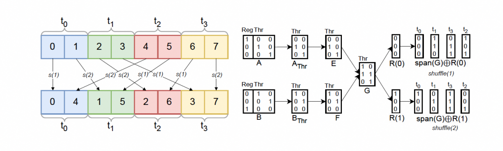
위 그림은 warp shuffle을 사용하는 example을 보여 준다. \(t_i\)는 thread \(i\), \(s(i)\)는 \(i\)번째 shuffle round다. 이 example에서는 \(V\)와 \(I\)가 모두 empty set이다. 이어서 space \(\mathbb F_3^2\)를 complete하기 위해 \(R(0) = [0, 0, 0]^T\)와 \(R(1) = [0, 1, 0]^T\)를 define하고 \(span(G)\)를 얻는다. vector set의 span은 그 set 안 vector들의 모든 linear combination으로 이루어진 set이고 \(V\)와 \(I\)가 empty이므로, \(span(V \cup I \cup G) = span(G) = \{[0 0 0]^T, [1 1 0]^T, [0 1 1]^T, [1 0 1]^T\}\)다. \(R(i) \oplus span(G)\)의 result는 \(i\)번째 shuffle round에 참여할 element position을 나타낸다. 각 round에서 각 thread는 element 하나만 send하고 receive한다.
Intra-warp Data Exchange: optimal Warp Shuffle generation¶
이 algorithm은 general framework의 concrete instantiation으로, warp 안 data exchange problem을 일련의 warp shuffle instruction으로 transform하는 데 사용된다.
- Invariant part 식별: algorithm은 먼저 layout \(A\)와 \(B\) 사이에서 어떤 part가 invariant인지 식별한다. \(V=A_{\text{Reg}} \cap B_{\text{Reg}}\)는 register mapping에서 invariant한 part이며, 이들은 함께 bundle되어 vectorized exchange될 수 있다. \(I=A_{\text{Thr}} \cap B_{\text{Thr}}\)는 thread mapping에서 invariant한 part이며, corresponding thread dimension은 exchange가 필요 없다. 이는 complex problem에서 simplification breakthrough를 찾는 전형적인 생각이다.
- Exchange basis construction: \(G = \{e_i \oplus f_i\}\)를 clever하게 construct한다. 여기서 \(e_i\)는 source thread index의 basis에서 오고, \(f_i\)는 target thread index의 basis에서 온다. \(e_i \oplus f_i\)는 실제로 "exchange pattern"을 encode한다. 예를 들어 \(e_i\)가
...0100(thread 4)이고 \(f_i\)가...0110(thread 6)이면, \(e_i \oplus f_i\)는...0010(mask 2)이다. 이는 data를 hold한 thread와 data가 필요한 thread의 ID 차이가XOR 2라는 뜻이다. NVIDIA의shfl.sync.idx같은warp shuffleinstruction은 바로 이런 operation을 위해 design되었다. \(span(G)\)는 필요한 모든 exchange pattern으로 구성된 subspace를 span한다. - Tiling: 보통 한 번의
warp shuffle으로 모든 data exchange를 완료할 수 없다. algorithm은 basis를 전체 space로 extend하고 complement set \(R\)로 tiling하여 complex exchange task를 \(2^{|R|}\) round의 simplewarp shuffle로 decompose한다. 이것은 divide-and-conquer strategy다.
이 algorithm의 가치는 generality에 있다. 특정 layout에 의존하지 않고, intra-Warp exchange condition만 만족하면 일련의 warp shuffle instruction을 자동으로 derive할 수 있다. 그래서 compiler가 이런 advanced hardware feature를 자동 활용할 수 있게 된다. 이전에는 보통 developer가 complex PTX assembly를 manual로 작성해야 했다.
5.4.3 Optimal Swizzling¶
이제 optimal swizzled layout을 계산하는 algorithm을 소개한다. 이 layout은 임의의 linear layout에 대해 read/write vectorization을 maximize하면서 bank conflict를 minimize할 수 있다.
shared memory layout을 하나의 mapping으로 표현한다:
여기서 \(s = d - v - b\)다. 첫 번째 space Vec은 vectorization에 대응하고, 두 번째 space Bank는 각 segment 안의 memory bank를 나타내며, 세 번째 space Seg는 segment index에 대응한다.
bank conflict를 minimize하려면 서로 다른 segment에 속한 각 bank가 서로 다른 thread에 의해 access되어야 한다. \(P = span(M_{\text{Vec}} \cup A_{\text{Thr}})\)라고 하자. 우리의 목표는 \(P \cap span(H) = \{0\}\)가 되게 하는 maximum subspace \(H\)를 identify하는 것이다. \(P\)가 \(span(H)\)와 overlap하면 적어도 두 thread가 서로 다른 segment에서 같은 bank에 access할 수 있다는 뜻이다. worst case에서 segment space \(span(H)\)가 \(P\)와 같으면 모든 thread가 서로 다른 segment에서 같은 bank에 access한다. Figure 5(2)에는 2-way conflict가 있다. \(t_0\)와 \(t_2\)가 같은 bank에 access하고, \(t_1\)과 \(t_3\)도 그렇기 때문이다.
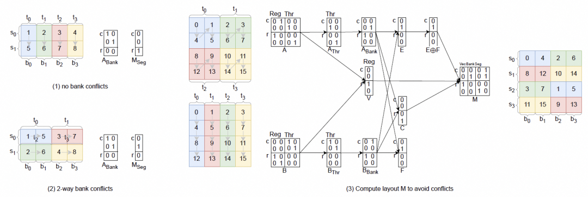
다음으로 layout \(A\)와 \(B\)가 존재할 때의 bank conflict optimization algorithm을 설명한다. 먼저 \(A_{\text{Reg}} \cap B_{\text{Reg}}\)의 basis 하나를 선택해 size \(2^v\)인 vectorization set \(V\)를 define한다. 이는 warp shuffle에서와 같다.
byte width가 \(w\)인 data type에 대해, 모든 shared memory bank를 cover하는 데 필요한 vectorized element count의 logarithm을 \(b\)라고 하자. modern GPU에서는 \(b = \log_2{\frac{128}{2^v w}}\)다. NVIDIA GPU에서 .v4 같은 vectorization modifier를 사용하면 128 byte를 초과하는 transaction은 여러 128-byte transaction으로 split된다. 따라서 우리는 \(A_{\text{Thr}}\)와 \(B_{\text{Thr}}\)에서 각각 마지막 몇 개의 \(\log_2 \max(1, \frac{2^v w}{4})\) vector를 꺼내 두 new layout \(A_{\text{Bank}}\)와 \(B_{\text{Bank}}\)를 생성한다.
다음으로 define한다:
bank conflict를 minimize하기 위해 우리는 \(P \cap span(H) = \{0\}\)가 되는 maximum subspace \(H\)를 찾는 데 관심이 있다. 다음을 define한다:
without loss of generality로 \(|E| \le |F|\)라고 가정한다. 그런 다음 선택한 order에 따라 element를 enumerate하고 다음을 construct한다:
다음으로 \(P\)의 complementary subspace로 basis \(C\)를 construct하고, 아래와 같이 \(M_{\text{Seg}}\)의 column을 determine한다:
- \(|H| + |C| \ge s\)이면, \(H \cup C\)에서 \(s\)개의 vector를 선택한다.
- \(|H| + |C| < s\)이면 bank conflict는 unavoidable하다. \(A_{\text{Bank}}\)에서 남은 \(s - |H| - |C|\)개의 vector를 추가한다.
마지막으로 warp shuffling process와 유사하게 \(M\)의 column을 \(\mathbb F_d^2\)의 basis로 complete하여 \(S_{\text{Bank}}\)를 선택한다. \(M\)은 maximum vectorization을 제공하는 동시에 read/write bank conflict를 minimize하는 swizzled layout이다.
Figure 5는 이 algorithm의 workflow를 보여 준다. read/write는 bank conflict가 없는 네 번의 transaction으로 split된다. 예를 들어 memory read에서 첫 번째 transaction에서는 \(t_0\)가 0(\(b_0\))과 4(\(b_1\))를 read하고, \(t_1\)은 1(\(b_2\))과 5(\(b_3\))를 read한다. 두 번째 transaction에서는 \(t_2\)가 2(\(b_2\))와 6(\(b_3\))을 read하고, \(t_3\)는 3(\(b_0\))과 7(\(b_1\))을 read한다.
Optimal Swizzling: arbitrary data layout을 위한 automatic generation¶
이것은 이 section, 나아가 전체 paper에서 가장 중요한 contribution이다. Bank conflict는 GPU programming에서 오래되고 까다로운 problem이며, 보통 fixed and empirical swizzling pattern으로 완화된다. 이 algorithm은 arbitrary data layout에 대해 optimal swizzling pattern을 자동 생성하는 방법을 제공한다.
- algorithm은 먼저 problem을 mathematical하게 model한다. shared memory address는
Vec,Bank,Seg세 part로 decompose된다. Bank conflict의 본질은 서로 다른 thread(\(A_{\text{Thr}}\))가 같은 Bank index(\(M_{\text{Bank}}\))에 access했지만 서로 다른 segment index(\(M_{\text{Seg}}\))에 access했다는 것으로 귀결된다. linear algebra language에서는 이것이 \(span(A_{\text{Thr}})\)와 \(span(M_{\text{Seg}})\)의 intersection이 \(\{0\}\)가 아니라는 뜻이다. - algorithm의 목표는 \(M_{\text{Seg}}\)에 대해 그 span space가 thread access pattern의 space \(P\)와 "orthogonal", 즉 intersection이 zero가 되도록 하는 basis vector set을 찾는 것이다.
-
optimal solution construction:
-
algorithm은 \(H = \{e_i \oplus f_i\}\)와 complement space \(C\)를 통해 \(P\)와 conflict할 가능성이 "가장 낮은" "safe" subspace \(span(H \cup C)\)를 construct한다.
- 이 safe space에서 \(M_{\text{Seg}}\)에 사용할 basis vector를 우선 선택한다. 이렇게 하면 서로 다른 thread가 서로 다른 segment에 access하도록 최대한 보장하여 bank conflict를 피할 수 있다.
-
safe space가 필요한 \(s\)-dimensional segment index space를 구성하기에 부족할 때만, algorithm은 conflict를 일으킬 수 있는 space(\(A_{\text{Bank}}\))에서 vector를 선택하도록 "forced"된다. 이는 conflict를 완전히 제거할 수 없을 때도 algorithm이 conflict를 minimize하는 solution을 낼 수 있음을 뜻한다.
-
final layout:
Vec와Seg의 basis가 결정되면 remaining basis는 자연스럽게Bankpart를 구성한다. 최종 matrix \(M\)이 바로 optimalswizzlinglayout이다.
이 algorithm의 중요한 impact:
swizzlingdesign을 hardware manual과 programming experience에 의존하던 방식에서 rigorous mathematical proof가 있는 paradigm으로 전환한다.- 이 algorithm은 완전히 general하다. upstream distributed layout \(A\)와 \(B\)가 어떤 모양이든, 그에 맞는 optimal shared memory layout을 자동으로 derive할 수 있다. 이는 compiler가
GEMM같은 소수 standard operation만 optimize하는 것이 아니라 다양한 custom operator의 memory access를 자동 optimize할 수 있음을 뜻한다. - algorithm은
maximize vectorization과minimize bank conflict를 보장할 수 있음이 증명되었다. 이는 hardware limit에 가까운 performance의 code를 generate하기 위한 theoretical guarantee를 제공한다.
5.5 Optimized code generation for Gather¶
tl.gather operator는 index tensor의 index를 사용해 given axis를 따라 source tensor(src)에서 specified element를 extract한다. src와 index의 axis dimension에 있는 모든 element가 같은 warp 안에 resident한다면, warp shuffle로 이 operation을 optimize할 수 있다. 이는 \(L^\text{axis}_\text{Wrp}\)의 모든 element가 zero인지 check해 determine할 수 있다. 여기서 \(L\)은 src와 index가 share하는 layout이다.
thread 사이에서 element를 exchange하기 위해, axis 위의 각 position pos에 대해 먼저 index(pos)를 read해 source data의 position을 얻고, \(L(\text{index}(\text{pos}))_{\text{Reg}}\)와 \(L(\text{index}(\text{pos}))_{\text{Thr}}\)를 사용해 source data를 hold하는 register와 thread를 identify한다.
그다음 \(n\) round의 warp shuffle을 실행한다. 여기서 \(n = 2^{|L^{\text{axis}}_{\text{Thr}}|}\)다. 각 round에서 thread 하나는 자기 \(i\)번째 value를 send하고, source thread \(L(\text{index}(\text{pos}))_{\text{Thr}}\)로부터 value 하나를 receive한다. received value는 \(i = L(\text{index}(i))_{\text{Reg}}\)일 때만 store된다.
먼저 optimization의 prerequisite은 "data exchange가 warp 내부에서만 발생한다"는 것이다. Linear Layout framework에서는 이것이 \(L^\text{axis}_\text{Wrp}\)의 모든 element가 zero라는 명확한 condition으로 transform된다. 조금 더 자세히 풀어 보자.
- \(L\)은 src와 index tensor의 layout matrix다.
- \(L^\text{axis}\)는 이 matrix에서 axis dimension에 대응하는 row들이다.
- \(L^\text{axis}_{\text{Wrp}}\)는 \(L^\text{axis}\) 중 Warp ID input bit에 대응하는 column들이다.
\(L^\text{axis}_{\text{Wrp}}\)의 모든 element가 zero라는 것은 axis dimension에서 logical coordinate 변화가 Warp ID에 전혀 의존하지 않는다는 뜻이다. 다시 말해 axis dimension의 모든 data가 같은 Warp의 서로 다른 thread 또는 register로 mapping되어 있다는 뜻이다.
Note: compiler는 더 이상 warp shuffle을 사용할 수 있는지 추측하기 위해 heuristic rule이나 pattern matching에 의존할 필요가 없다. algebraic operation을 수행해 정확한 yes/no answer를 얻을 수 있으므로 optimization이 더 reliable하고 general해진다.
6. Evaluation¶
이 chapter는 일련의 Micro test와 real-world benchmark를 통해 Linear Layout을 integrate한 Triton(Triton-Linear)이 original Triton(Triton) 대비 correctness, robustness, performance에서 가지는 장점을 보여 준다.
hardware platform:
| Platform | GPU model | Memory | Notes |
|---|---|---|---|
| RTX4090 | NVIDIA RTX4090 | 24GB GDDR6X | consumer GPU |
| GH200 | NVIDIA GH200 | 80GB HBM2e | data center GPU |
| MI250 | AMD MI250 | 64GB HBM2 | data center GPU |
6.1 Micro-Benchmarks¶
Hyperparameters¶
mixed-precision Matmul을 제외한 모든 test는 four warp와 one CTA로 실행했다. mixed-precision Matmul benchmark는 CTA마다 four warp를 사용하고, CTA count는 input size에 따라 달라진다.
LD/ST contiguity¶
마지막 dimension size와 data type이 서로 다른 tensor를 load/store하기 위한 benchmark를 synthetic하게 만들었다. Triton과 Triton-Linear의 pass rate는 table에 표시되어 있다.
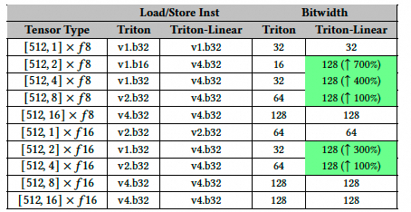
traditional layout을 사용하는 Triton은 contiguous element가 multiple dimension을 cross할 때, 각 thread가 이 element들을 contiguous하게 access할 수 있더라도 maximum number of contiguous elements를 identify하지 못한다. 반면 Linear Layout은 dimension을 cross하는 maximum contiguous element count를 identify할 수 있어 load/store instruction access bit width를 최대 7배까지 늘린다.
Broadcast¶
section 5.1에서 설명했듯 Linear Layout을 사용하면 duplicate data를 hold하는 thread와 warp를 correct하게 identify할 수 있어 redundant load/store instruction을 피하는 데 도움이 된다. 따라서 Micro-Benchmark test를 design해 Triton에서 가장 common한 layout을 enumerate하고, 다음 shape의 tensor에 reduction operation을 apply했다: [128, 16], [128, 128], [32, 128], [32, 32], [16, 16]. 아래 table의 experiment result는 Triton-Linear가 모든 layout combination의 reduction operation을 지원할 뿐만 아니라 shared memory store instruction count도 최대 76% 줄였음을 보여 준다.
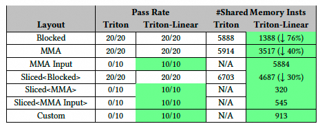
Mixed-precision Matmul¶
Triton-Linear와 Triton의 mixed-precision matrix multiplication performance를 비교하기 위해 두 Micro-Benchmark test를 만들었다. 먼저 Triton에서 common한 모든 tensor data type을 pairwise로 enumerate하고, simple matrix multiplication kernel의 correctness를 서로 다른 shape에서 test했다. table에서 볼 수 있듯 Triton은 많은 경우 실패했으며, 총 784개 case에서 overall pass rate가 46.6%에 불과했다. 반면 Triton-Linear는 모든 test case를 성공적으로 통과했다.
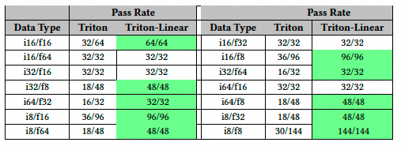
그 behind의 main reason은 Triton이 small size와 low precision data type의 matrix multiplication을 correct하게 implement하지 않았기 때문이다. 사실 Triton은 tile의 마지막 dimension에서 32 bit를 초과하는 contiguous element를 가진 어떤 MMA layout도 지원하지 않는다. 반면 Linear Layout은 code generation을 위한 solid foundation을 제공하여 matrix multiplication의 모든 valid distributed layout을 support하도록 보장한다.
그다음 두 번째 Micro-Benchmark test를 만들어 section 5.2에서 설명한 data rearrangement optimization이 가져오는 performance gain을 evaluate했다.
operand 하나를 mxfp4로 고정하고 다른 operand의 precision을 바꿨다. 그림에서 보듯 vectorized shared memory instruction이 가져오는 higher throughput 덕분에 Triton-Linear는 서로 다른 tensor shape와 data type에서 지속적으로 Triton보다 우수하다.
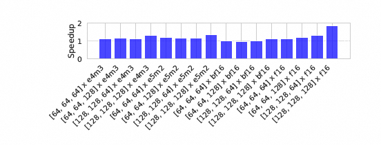
주목할 점은 mxfp4 × f16 series experiment가 더 높은 speedup(1.87배)을 보였다는 것이다. mixed-precision case에서 Triton이 f16에 wgmma를 사용하지 않던 문제도 해결했기 때문이다.
Layout Conversion¶
warp shuffle을 사용해 layout conversion을 수행할 때 Triton과 Triton-Linear의 performance를 비교했다. test는 서로 다른 size와 data type의 tensor를 evaluate했다. 그림에서 보듯 Triton-Linear는 layout conversion에 항상 shared memory 기반 방식을 사용하는 Triton보다 지속적으로 우수하며, 최대 3.93배 speedup을 달성했다.
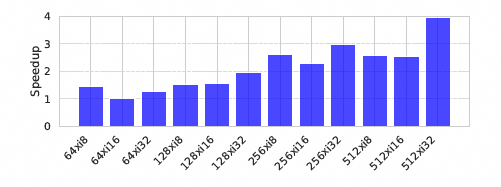
Gather¶
warp shuffle을 사용할 때 gather operator의 performance improvement를 evaluate하고, 항상 shared memory를 사용하는 Triton implementation과 비교했다.
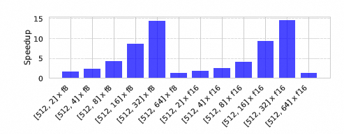
그림에서 보듯 Triton-Linear는 Triton 대비 최대 14.20배 speedup을 달성했다. 흥미롭게도 gather dimension이 증가하면 speedup이 어떤 지점, 예를 들어 [512, 32] 이후 감소한다. multiple round의 warp shuffle을 issue하는 overhead가 shared memory access 제거로 얻는 benefit을 초과하기 때문이다.
6.2 Real Benchmarks¶
세 개의 서로 다른 platform에서 TritonBench의 21개 benchmark를 실행해 Triton과 Triton-Linear의 performance를 비교했다. 아래 그림은 세 platform에서 Triton-Linear의 performance gain을 보여 준다.
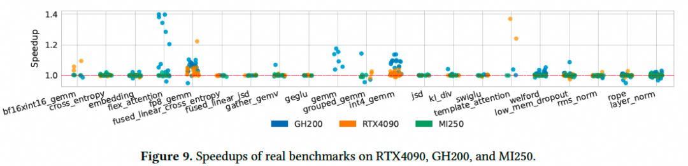
각 benchmark에는 여러 input이 있으므로 총 265개 case가 있고, 각 case의 speedup은 circle로 표시했다. hardware limitation 때문에 모든 benchmark가 모든 platform에서 사용 가능한 것은 아니라는 점에 주의하라. 예를 들어 일부 benchmark는 GH200에만 있는 large shared memory가 필요하고, 몇몇 kernel이 사용하는 tensor descriptor는 TMA engine에 의존하는데 RTX4090과 MI250에는 이것이 없다. 또한 1.0보다 낮은 speedup은 대부분 benchmark가 small input을 사용할 때 생기는 runtime noise 때문이다.
GH200에서는 0.96배에서 1.40배 speedup을 달성했다. speedup이 가장 두드러진 benchmark는 int4_gemm, gemm, flex_attention이다. ldmatrix와 stmatrix 같은 efficient hardware primitive가 이런 kernel의 layout conversion과 shared memory LD/ST operation에 널리 사용된다는 점을 관찰할 수 있다.
welford operator에 대해 Triton-Linear는 "equivalent" layout 사이의 conversion을 detect하여 conversion을 no-op으로 lower할 수 있다. 이런 optimization은 traditional layout system에서는 불가능하다. 서로 다른 type의 layout, 예를 들어 Blocked와 Sliced layout을 직접 compare할 수 없기 때문이다.
그다음 아래 table을 그려 Triton GPU IR에서 convert_layout, local_load, local_store operation의 distribution을 보여 주고, Linear Layout의 benefit이 이 operation들과 관련된 cost를 optimize하는 데서 온다는 것을 확인했다.
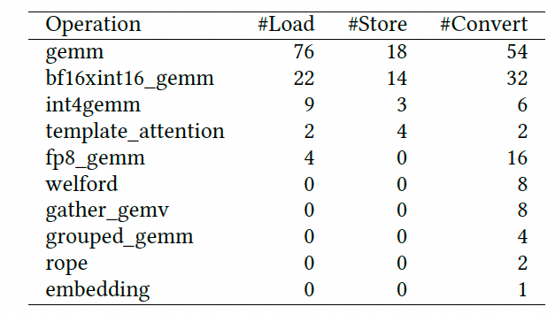
RTX4090에서는 0.97배에서 1.37배 speedup을 달성했다. template_attention에서는 더 높은 speedup을 얻었는데, 이는 mma(RTX4090)와 wgmma(GH200) instruction 사이의 차이 때문이다. 이 경우 tt.dot operation의 left operand는 loop 밖에서 define되고 같은 address에서 data를 반복 load하므로 ldmatrix와 regular shared memory instruction 모두 high throughput을 낼 수 있다. 반면 right operand는 각 iteration에서 update되고, wgmma는 shared memory 안의 그것에 직접 access한다. RTX4090에서만 Linear-Layout optimization 이후 이것이 ldmatrix로 lower된다. 그 결과 GH200에서의 speedup은 더 낮다.
MI250에서는 1.00배에서 1.03배 speedup을 달성했다. 전체적으로 ldmatrix 같은 efficient hardware primitive가 부족하기 때문에 AMD GPU에서 Triton-Linear의 speedup은 NVIDIA GPU보다 낮다.
7. Related work¶
이 chapter는 Linear Layout을 네 가지 key field, 즉 DL compiler, hardware resource mapping, polyhedral compilation, Triton ecosystem 안에 위치시킨다. 이를 통해 저자들은 contribution scope와 novelty를 명확히 구분한다.
general DL compiler와의 comparison에서는 operator/tile-level compiler로 positioning한다. 목표는 operator-level compiler의 capability를 강화해 flexibility를 유지하면서 complex low-level optimization, 특히 layout management를 더 systematic하고 automatic하게 처리할 수 있게 하는 것이다.
hardware resource mapping work와의 comparison에서는 주로 CuTe와 비교한다. CuTe는 NVIDIA가 CUTLASS 3.0에서 도입한 layout description library로, Linear Layout idea와 가장 유사한 work다. CuTe는 expert에게 layout을 manual로 construct하고 manipulate할 rich tool set을 제공하는 library다. 반면 Linear-Layout은 compiler built-in framework이며, compiler가 layout을 automatically derive하고 optimize하도록 하는 것이 목표다.
polyhedral compilation과의 comparison에서 polyhedral model은 integer domain \(\mathbb{Z}\) 위에서 작동하며 loop의 macro scheduling과 data dependency를 처리한다. Linear Layout은 finite field \(F_2\) 위에서 작동하며 tile 내부의 micro data distribution을 처리한다. 둘은 complementary relationship이다.
Triton ecosystem 안에서의 positioning은 이렇다. upper framework가 Triton code를 어떻게 generate하거나 transform하든, 최종적으로 efficient GPU code를 generate하려면 Triton compiler backend가 필요하다. 더 powerful하고 robust하며 optimization capability가 강한 backend, 즉 Linear Layout이 integrate된 backend는 이런 모든 upper framework에 benefit을 준다. Linear Layout은 clear하고 predictable한 low-level abstraction을 제공하므로 upper framework가 high-performance code를 더 쉽게 reason하고 generate할 수 있게 한다.
참고 자료
[1]
Linear Layouts: Robust Code Generation of Efficient Tensor Computation Using F2: https://arxiv.org/abs/2505.23819
[2]
A note on the algebra of CuTe Layouts: https://research.colfax-intl.com/wp-content/uploads/2024/01/layout_algebra.pdf